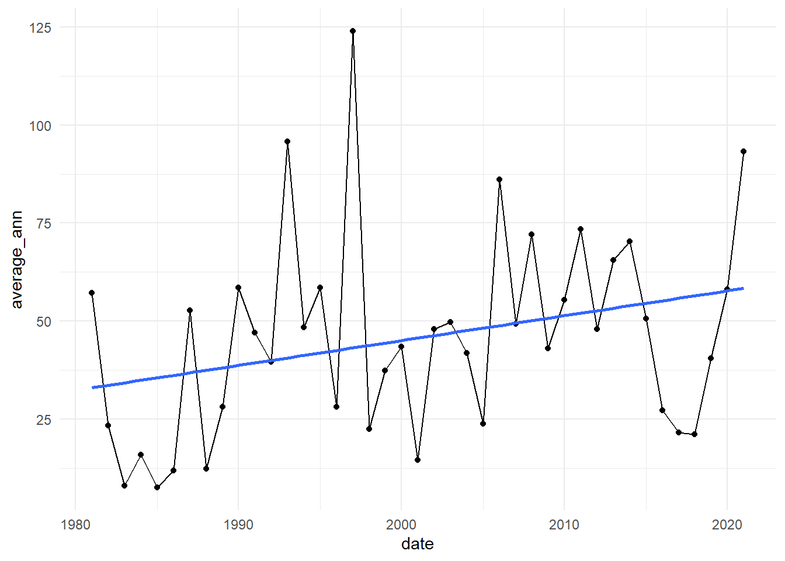

library(tidyverse)
library(Kendall)
library(readr)
library(forecast)
library(astsa)
library(xts)
library(broom)
library(trend)
library(gt)
library(modifiedmk)
library(trendchange)
library(car)
library(lmtest)
library(ggtext)
library(glue)
library(outliers)
library(Hmisc)
library(gt)
theme_set(theme_minimal())Spatio-temporal Trends of Precipitation Analysis in the Riverine Agriculture Area of the Shabelle River using the Mann-Kendall (MK) Family and Innovative Trend Analysis (ITA)
Data Analysis
The following code, graphs, and tables are based on the article “Spatio-temporal Trends of Precipitation Analysis in the Riverine Agriculture Area of the Shabelle River using the Mann-Kendall (MK) Family and Innovative Trend Analysis (ITA),” which I co-authored with my friend Yazin Mohamed Ibrahim. We have made the code and the data available for transparency and research replicability for other researchers and individuals with a keen interest in the subject. You are free to use the code and the data without any restrictions.
Libraries used during the analysis
Data Manipulation and Modelling
afgooye <- read_csv("Afgooye.csv")
qoryooley <- read_csv("Qoryooley.csv")
glimpse(afgooye)Rows: 40
Columns: 18
$ year <dbl> 1981, 1982, 1983, 1984, 1985, 1986, 1987, 1988, 1989, 1990, 199…
$ JAN <dbl> 0.00, 58.01, 5.27, 0.00, 0.00, 0.00, 0.00, 0.00, 0.00, 0.00, 10…
$ FEB <dbl> 21.09, 5.27, 0.00, 0.00, 0.00, 0.00, 0.00, 0.00, 0.00, 0.00, 0.…
$ MAR <dbl> 73.83, 0.00, 0.00, 0.00, 15.82, 0.00, 10.55, 15.82, 0.00, 10.55…
$ APR <dbl> 358.59, 21.09, 79.10, 36.91, 10.55, 0.00, 21.09, 21.09, 116.02,…
$ MAY <dbl> 21.09, 5.27, 15.82, 10.55, 10.55, 5.27, 163.48, 36.91, 42.19, 1…
$ JUN <dbl> 0.00, 10.55, 0.00, 0.00, 5.27, 0.00, 0.00, 5.27, 0.00, 0.00, 0.…
$ JUL <dbl> 0.00, 10.55, 0.00, 0.00, 0.00, 0.00, 152.93, 0.00, 0.00, 0.00, …
$ AUG <dbl> 0.00, 10.55, 0.00, 63.28, 0.00, 0.00, 5.27, 0.00, 0.00, 0.00, 0…
$ SEP <dbl> 52.73, 0.00, 0.00, 0.00, 0.00, 0.00, 0.00, 0.00, 0.00, 0.00, 0.…
$ OCT <dbl> 15.82, 5.27, 0.00, 15.82, 0.00, 36.91, 21.09, 0.00, 5.27, 89.65…
$ NOV <dbl> 31.64, 52.73, 0.00, 10.55, 0.00, 5.27, 36.91, 0.00, 10.55, 94.9…
$ DEC <dbl> 10.55, 0.00, 0.00, 0.00, 0.00, 21.09, 0.00, 15.82, 10.55, 79.10…
$ ANN <dbl> 585.35, 179.30, 100.20, 137.11, 42.19, 68.55, 411.33, 94.92, 18…
$ Jilaal <dbl> 94.92, 63.28, 5.27, 0.00, 15.82, 0.00, 10.55, 15.82, 0.00, 10.5…
$ `Gu'` <dbl> 379.68, 36.91, 94.92, 47.46, 26.37, 5.27, 184.57, 63.27, 158.21…
$ Hagaa <dbl> 52.73, 21.10, 0.00, 63.28, 0.00, 0.00, 158.20, 0.00, 0.00, 0.00…
$ Deyr <dbl> 58.01, 58.00, 0.00, 26.37, 0.00, 63.27, 58.00, 15.82, 26.37, 26…afgoye_wt_tes <- tibble(
Station = c('Afgoye'),
Data = c('Annual', 'Jilal', "Haga", 'Deyr', "Gu"),
`Durban-Watson Statistic` = c( 'DW = 1.785', 'DW = 1.903', 'DW = 1.241', "DW = 2.588", "DW = 1.813"),
`P-Value` = c('0.195', '0.316', '0.004', '0.959', '0.2211')
)
afgoye_wt_tes |>
gt(id='two') |>
fmt_number(
columns = everything(),
rows = everything(),
decimals = 4
) |>
cols_align(align = 'center') |>
tab_options(table.width = pct(70))| Station | Data | Durban-Watson Statistic | P-Value |
|---|---|---|---|
| Afgoye | Annual | DW = 1.785 | 0.195 |
| Afgoye | Jilal | DW = 1.903 | 0.316 |
| Afgoye | Haga | DW = 1.241 | 0.004 |
| Afgoye | Deyr | DW = 2.588 | 0.959 |
| Afgoye | Gu | DW = 1.813 | 0.2211 |
########################################################################
Qoryoley_dw_test <- tibble(
Station = c('Qoryoley'),
Data = c('Annual', 'Jilal', "Haga", 'Deyr', "Gu"),
`Durban-Watson Statistic` = c( 'DW = 1.875', 'DW = 1.924', 'DW = 0.851', "DW = 2.520", "DW = 1.902"),
`P-Value` = c('0.284', '0.339', '0.000', '0.938', '0.314')
)
Qoryoley_dw_test |>
gt(id='two') |>
fmt_number(
columns = everything(),
rows = everything(),
decimals = 4
) |>
cols_align(align = 'center') |>
tab_options(table.width = pct(70))| Station | Data | Durban-Watson Statistic | P-Value |
|---|---|---|---|
| Qoryoley | Annual | DW = 1.875 | 0.284 |
| Qoryoley | Jilal | DW = 1.924 | 0.339 |
| Qoryoley | Haga | DW = 0.851 | 0.000 |
| Qoryoley | Deyr | DW = 2.520 | 0.938 |
| Qoryoley | Gu | DW = 1.902 | 0.314 |
qoryoley_lm <- lm(`Gu'` ~ YEAR, qoryooley)
durbinWatsonTest(qoryoley_lm) lag Autocorrelation D-W Statistic p-value
1 0.02827726 1.901501 0.586
Alternative hypothesis: rho != 0dwtest(qoryoley_lm)
Durbin-Watson test
data: qoryoley_lm
DW = 1.9015, p-value = 0.3135
alternative hypothesis: true autocorrelation is greater than 0afgoye_lm <- lm(`Gu'` ~ year, afgooye)
durbinWatsonTest(afgoye_lm) lag Autocorrelation D-W Statistic p-value
1 0.02287376 1.812921 0.416
Alternative hypothesis: rho != 0dwtest(afgoye_lm)
Durbin-Watson test
data: afgoye_lm
DW = 1.8129, p-value = 0.2211
alternative hypothesis: true autocorrelation is greater than 0afgoye_trend_tes <- ts(afgooye$ANN, start = 1981, frequency = 1)
afgoye_deyr <- ts(afgooye$Jilaal, start = 1981, frequency = 1)
MannKendall(afgoye_deyr)tau = -0.133, 2-sided pvalue =0.26291options(scipen = 999)
afgooye_df <- afgooye |>
pivot_longer(cols = JAN:DEC, names_to = 'months',
values_to = 'precipitation')
afgooye_seasonal <- afgooye |>
pivot_longer(cols = Jilaal:Deyr,
names_to = 'seasons',
values_to = 'precipitation')
afgooye_seasonal |>
glimpse()Rows: 160
Columns: 16
$ year <dbl> 1981, 1981, 1981, 1981, 1982, 1982, 1982, 1982, 1983, 19…
$ JAN <dbl> 0.00, 0.00, 0.00, 0.00, 58.01, 58.01, 58.01, 58.01, 5.27…
$ FEB <dbl> 21.09, 21.09, 21.09, 21.09, 5.27, 5.27, 5.27, 5.27, 0.00…
$ MAR <dbl> 73.83, 73.83, 73.83, 73.83, 0.00, 0.00, 0.00, 0.00, 0.00…
$ APR <dbl> 358.59, 358.59, 358.59, 358.59, 21.09, 21.09, 21.09, 21.…
$ MAY <dbl> 21.09, 21.09, 21.09, 21.09, 5.27, 5.27, 5.27, 5.27, 15.8…
$ JUN <dbl> 0.00, 0.00, 0.00, 0.00, 10.55, 10.55, 10.55, 10.55, 0.00…
$ JUL <dbl> 0.00, 0.00, 0.00, 0.00, 10.55, 10.55, 10.55, 10.55, 0.00…
$ AUG <dbl> 0.00, 0.00, 0.00, 0.00, 10.55, 10.55, 10.55, 10.55, 0.00…
$ SEP <dbl> 52.73, 52.73, 52.73, 52.73, 0.00, 0.00, 0.00, 0.00, 0.00…
$ OCT <dbl> 15.82, 15.82, 15.82, 15.82, 5.27, 5.27, 5.27, 5.27, 0.00…
$ NOV <dbl> 31.64, 31.64, 31.64, 31.64, 52.73, 52.73, 52.73, 52.73, …
$ DEC <dbl> 10.55, 10.55, 10.55, 10.55, 0.00, 0.00, 0.00, 0.00, 0.00…
$ ANN <dbl> 585.35, 585.35, 585.35, 585.35, 179.30, 179.30, 179.30, …
$ seasons <chr> "Jilaal", "Gu'", "Hagaa", "Deyr", "Jilaal", "Gu'", "Haga…
$ precipitation <dbl> 94.92, 379.68, 52.73, 58.01, 63.28, 36.91, 21.10, 58.00,…afgooye_df |>
glimpse()Rows: 480
Columns: 8
$ year <dbl> 1981, 1981, 1981, 1981, 1981, 1981, 1981, 1981, 1981, 19…
$ ANN <dbl> 585.35, 585.35, 585.35, 585.35, 585.35, 585.35, 585.35, …
$ Jilaal <dbl> 94.92, 94.92, 94.92, 94.92, 94.92, 94.92, 94.92, 94.92, …
$ `Gu'` <dbl> 379.68, 379.68, 379.68, 379.68, 379.68, 379.68, 379.68, …
$ Hagaa <dbl> 52.73, 52.73, 52.73, 52.73, 52.73, 52.73, 52.73, 52.73, …
$ Deyr <dbl> 58.01, 58.01, 58.01, 58.01, 58.01, 58.01, 58.01, 58.01, …
$ months <chr> "JAN", "FEB", "MAR", "APR", "MAY", "JUN", "JUL", "AUG", …
$ precipitation <dbl> 0.00, 21.09, 73.83, 358.59, 21.09, 0.00, 0.00, 0.00, 52.…afgooye_seasonal |>
group_by(year, seasons) |>
summarise(average_pre = mean(precipitation)) |>
ggplot(aes(year, average_pre)) +
geom_line() +
facet_wrap(~ seasons) + geom_point() +
geom_smooth(method = lm, se=FALSE, aes(group = 1), col='blue') +
labs(title = 'Afgoye Data',
subtitle = 'Average Seasonal varaions of rainfall')
afgooye_df |>
ggplot(aes(year, ANN)) + geom_point() +
geom_line() +
geom_smooth(method = lm, se = FALSE) +
labs(title = 'Afgoye Data',
y = 'Average Annual Rainfall',
subtitle = 'Average annual rainfall for over 40 years')afgoye_annul <- afgooye_df |>
distinct(year, .keep_all = TRUE)
afgoye_annual_ts <- ts(afgoye_annul$ANN, start = 1981,
frequency = 1)
afgoye_ts <- ts(afgooye_df$precipitation, start = 1981, frequency = 12)
afgooye_df# A tibble: 480 × 8
year ANN Jilaal `Gu'` Hagaa Deyr months precipitation
<dbl> <dbl> <dbl> <dbl> <dbl> <dbl> <chr> <dbl>
1 1981 585. 94.9 380. 52.7 58.0 JAN 0
2 1981 585. 94.9 380. 52.7 58.0 FEB 21.1
3 1981 585. 94.9 380. 52.7 58.0 MAR 73.8
4 1981 585. 94.9 380. 52.7 58.0 APR 359.
5 1981 585. 94.9 380. 52.7 58.0 MAY 21.1
6 1981 585. 94.9 380. 52.7 58.0 JUN 0
7 1981 585. 94.9 380. 52.7 58.0 JUL 0
8 1981 585. 94.9 380. 52.7 58.0 AUG 0
9 1981 585. 94.9 380. 52.7 58.0 SEP 52.7
10 1981 585. 94.9 380. 52.7 58.0 OCT 15.8
# ℹ 470 more rowsMannKendall(afgooye_df$Jilaal)tau = -0.131, 2-sided pvalue =0.000069826MannKendall(afgooye_df$`Gu'`)tau = 0.122, 2-sided pvalue =0.000081539MannKendall(afgooye_df$Hagaa)tau = 0.193, 2-sided pvalue =< 0.000000000000000222MannKendall(afgooye_df$Deyr)tau = 0.207, 2-sided pvalue =< 0.000000000000000222MannKendall(afgoye_ts)tau = 0.0803, 2-sided pvalue =0.015336MannKendall(afgoye_annual_ts)tau = 0.198, 2-sided pvalue =0.074571autoplot(afgoye_annual_ts)auto.arima(afgoye_annual_ts)Series: afgoye_annual_ts
ARIMA(0,0,0) with non-zero mean
Coefficients:
mean
378.6328
s.e. 35.0442
sigma^2 = 50383: log likelihood = -272.8
AIC=549.6 AICc=549.92 BIC=552.98pre_whiting_m <- arima(afgoye_annual_ts, order = c(1, 0, 0))
checkresiduals(pre_whiting_m)
Ljung-Box test
data: Residuals from ARIMA(1,0,0) with non-zero mean
Q* = 7.047, df = 7, p-value = 0.424
Model df: 1. Total lags used: 8pre_whetining_data <- residuals(pre_whiting_m)
MannKendall(pre_whetining_data)tau = 0.162, 2-sided pvalue =0.14529sens.slope(pre_whetining_data)
Sen's slope
data: pre_whetining_data
z = 1.4564, n = 40, p-value = 0.1453
alternative hypothesis: true z is not equal to 0
95 percent confidence interval:
-1.389265 11.213943
sample estimates:
Sen's slope
5.440936 sarima(afgoye_annual_ts, 1, 0, 0)initial value 5.402713
iter 2 value 5.397869
iter 3 value 5.397432
iter 4 value 5.397054
iter 5 value 5.397052
iter 5 value 5.397052
iter 5 value 5.397052
final value 5.397052
converged
initial value 5.395968
iter 2 value 5.395738
iter 3 value 5.395615
iter 4 value 5.395615
iter 4 value 5.395615
iter 4 value 5.395615
final value 5.395615
converged$fit
Call:
arima(x = xdata, order = c(p, d, q), seasonal = list(order = c(P, D, Q), period = S),
xreg = xmean, include.mean = FALSE, transform.pars = trans, fixed = fixed,
optim.control = list(trace = trc, REPORT = 1, reltol = tol))
Coefficients:
ar1 xmean
0.1141 381.1194
s.e. 0.1725 39.4366
sigma^2 estimated as 48577: log likelihood = -272.58, aic = 551.16
$degrees_of_freedom
[1] 38
$ttable
Estimate SE t.value p.value
ar1 0.1141 0.1725 0.6614 0.5123
xmean 381.1194 39.4366 9.6641 0.0000
$AIC
[1] 13.77911
$AICc
[1] 13.78722
$BIC
[1] 13.90577sarima(afgoye_ts, 1, 0, 0)initial value 4.068397
iter 2 value 4.043682
iter 3 value 4.043682
iter 4 value 4.043682
iter 4 value 4.043682
iter 4 value 4.043682
final value 4.043682
converged
initial value 4.042996
iter 2 value 4.042996
iter 3 value 4.042995
iter 4 value 4.042995
iter 4 value 4.042995
iter 4 value 4.042995
final value 4.042995
converged$fit
Call:
arima(x = xdata, order = c(p, d, q), seasonal = list(order = c(P, D, Q), period = S),
xreg = xmean, include.mean = FALSE, transform.pars = trans, fixed = fixed,
optim.control = list(trace = trc, REPORT = 1, reltol = tol))
Coefficients:
ar1 xmean
0.2193 31.5176
s.e. 0.0445 3.3300
sigma^2 estimated as 3248: log likelihood = -2621.73, aic = 5249.46
$degrees_of_freedom
[1] 478
$ttable
Estimate SE t.value p.value
ar1 0.2193 0.0445 4.9280 0
xmean 31.5176 3.3300 9.4647 0
$AIC
[1] 10.93637
$AICc
[1] 10.93642
$BIC
[1] 10.96245afgooye_df |>
glimpse()Rows: 480
Columns: 8
$ year <dbl> 1981, 1981, 1981, 1981, 1981, 1981, 1981, 1981, 1981, 19…
$ ANN <dbl> 585.35, 585.35, 585.35, 585.35, 585.35, 585.35, 585.35, …
$ Jilaal <dbl> 94.92, 94.92, 94.92, 94.92, 94.92, 94.92, 94.92, 94.92, …
$ `Gu'` <dbl> 379.68, 379.68, 379.68, 379.68, 379.68, 379.68, 379.68, …
$ Hagaa <dbl> 52.73, 52.73, 52.73, 52.73, 52.73, 52.73, 52.73, 52.73, …
$ Deyr <dbl> 58.01, 58.01, 58.01, 58.01, 58.01, 58.01, 58.01, 58.01, …
$ months <chr> "JAN", "FEB", "MAR", "APR", "MAY", "JUN", "JUL", "AUG", …
$ precipitation <dbl> 0.00, 21.09, 73.83, 358.59, 21.09, 0.00, 0.00, 0.00, 52.…afgoye_tiblle <- afgooye_df |>
mutate(date =ymd(year, truncated = 2L))
xts_afgoye <-xts(afgoye_tiblle$precipitation, order.by = afgoye_tiblle$date)
plot(xts_afgoye)class(xts_afgoye)[1] "xts" "zoo"afgoye_tiblle |>
group_by(date = floor_date(date, 'year')) |>
summarise(aver_prec = mean(precipitation)) |>
ggplot(aes(date, aver_prec)) + geom_line() +
geom_point() + geom_smooth(se=FALSE)custom_month_mapping <- c("JAN" = "January", "FEB" = "February",
"MAR" = "March",
"APR" = "April", "MAY" = "May",
"JUN" ="June",'JUL'= "July", "AUG"= "August" ,
"SEP" ="September", "OCT" ="October",
"NOV" ="November", "DEC" ="December")
afgoye_tiblle |>
mutate(months = custom_month_mapping[months]) |>
group_by(months) |>
summarise(aver_prec = mean(precipitation)) |>
mutate(months =factor(months, levels = month.name, ordered = TRUE)) |>
ggplot(aes(months, aver_prec)) + geom_col() +
geom_line(aes(y = aver_prec, group = 1), col='red')## Modelling Seasonal Data using simple Regression Analysis
lm(ANN ~ year, data = afgoye_annul) |>
tidy()# A tibble: 2 × 5
term estimate std.error statistic p.value
<chr> <dbl> <dbl> <dbl> <dbl>
1 (Intercept) -11234. 5940. -1.89 0.0662
2 year 5.80 2.97 1.96 0.0580model_data <- afgooye_seasonal |>
group_by(year, seasons) |>
summarise(mean_precipitation = mean(precipitation))
model_data# A tibble: 160 × 3
# Groups: year [40]
year seasons mean_precipitation
<dbl> <chr> <dbl>
1 1981 Deyr 58.0
2 1981 Gu' 380.
3 1981 Hagaa 52.7
4 1981 Jilaal 94.9
5 1982 Deyr 58
6 1982 Gu' 36.9
7 1982 Hagaa 21.1
8 1982 Jilaal 63.3
9 1983 Deyr 0
10 1983 Gu' 94.9
# ℹ 150 more rowsmodel_data |>
group_by(seasons) |>
nest() |>
mutate(lm_model = map(data, ~lm(mean_precipitation ~ year, data= .x))) |>
mutate(lm_tidy = map(lm_model, tidy)) |>
ungroup() |>
unnest(lm_tidy)# A tibble: 8 × 8
seasons data lm_model term estimate std.error statistic p.value
<chr> <list> <list> <chr> <dbl> <dbl> <dbl> <dbl>
1 Deyr <tibble [40 × 2]> <lm> (Inte… -5.86e+3 3656. -1.60 0.117
2 Deyr <tibble [40 × 2]> <lm> year 3.00e+0 1.83 1.64 0.109
3 Gu' <tibble [40 × 2]> <lm> (Inte… -2.39e+3 3441. -0.696 0.491
4 Gu' <tibble [40 × 2]> <lm> year 1.28e+0 1.72 0.745 0.461
5 Hagaa <tibble [40 × 2]> <lm> (Inte… -3.59e+3 2252. -1.59 0.119
6 Hagaa <tibble [40 × 2]> <lm> year 1.81e+0 1.13 1.61 0.116
7 Jilaal <tibble [40 × 2]> <lm> (Inte… 6.04e+2 940. 0.642 0.525
8 Jilaal <tibble [40 × 2]> <lm> year -2.89e-1 0.470 -0.615 0.542# Create a custom mapping of abbreviations to full month names
qoryooley |>
glimpse()Rows: 41
Columns: 18
$ YEAR <dbl> 1981, 1982, 1983, 1984, 1985, 1986, 1987, 1988, 1989, 1990, 199…
$ JAN <dbl> 0.00, 36.91, 5.27, 0.00, 0.00, 0.00, 0.00, 0.00, 0.00, 0.00, 26…
$ FEB <dbl> 31.64, 15.82, 0.00, 0.00, 0.00, 0.00, 0.00, 0.00, 0.00, 0.00, 0…
$ MAR <dbl> 121.29, 0.00, 0.00, 0.00, 36.91, 0.00, 10.55, 15.82, 0.00, 31.6…
$ APR <dbl> 369.14, 42.19, 52.73, 36.91, 26.37, 0.00, 26.37, 52.73, 184.57,…
$ MAY <dbl> 26.37, 31.64, 36.91, 31.64, 21.09, 31.64, 253.12, 58.01, 84.38,…
$ JUN <dbl> 0.00, 26.37, 0.00, 0.00, 5.27, 5.27, 0.00, 5.27, 0.00, 0.00, 0.…
$ JUL <dbl> 0.00, 31.64, 0.00, 0.00, 0.00, 0.00, 242.58, 0.00, 0.00, 0.00, …
$ AUG <dbl> 0.00, 26.37, 0.00, 68.55, 0.00, 0.00, 5.27, 0.00, 0.00, 0.00, 0…
$ SEP <dbl> 42.19, 0.00, 0.00, 0.00, 0.00, 0.00, 0.00, 0.00, 0.00, 0.00, 0.…
$ OCT <dbl> 42.19, 31.64, 0.00, 26.37, 0.00, 58.01, 36.91, 0.00, 15.82, 121…
$ NOV <dbl> 47.46, 31.64, 0.00, 26.37, 0.00, 21.09, 58.01, 0.00, 31.64, 105…
$ DEC <dbl> 5.27, 5.27, 0.00, 0.00, 0.00, 26.37, 0.00, 15.82, 21.09, 105.47…
$ ANN <dbl> 685.55, 279.49, 94.92, 189.84, 89.65, 142.38, 632.81, 147.66, 3…
$ Jilaal <dbl> 152.93, 52.73, 5.27, 0.00, 36.91, 0.00, 10.55, 15.82, 0.00, 31.…
$ `Gu'` <dbl> 395.51, 100.20, 89.64, 68.55, 52.73, 36.91, 279.49, 116.01, 268…
$ Hagaa <dbl> 42.19, 58.01, 0.00, 68.55, 0.00, 0.00, 247.85, 0.00, 0.00, 0.00…
$ Deyr <dbl> 94.92, 68.55, 0.00, 52.74, 0.00, 105.47, 94.92, 15.82, 68.55, 3… qoryooley_df <- qoryooley |>
pivot_longer(cols = JAN:DEC, names_to = 'months',
values_to = 'precipitation') |>
mutate(months = custom_month_mapping[months],
date = paste(YEAR, months, 01, sep = '-')) |>
mutate(date = parse_date(date, format = "%Y-%B-%d"))
qoryooley_df |>
glimpse()Rows: 492
Columns: 9
$ YEAR <dbl> 1981, 1981, 1981, 1981, 1981, 1981, 1981, 1981, 1981, 19…
$ ANN <dbl> 685.55, 685.55, 685.55, 685.55, 685.55, 685.55, 685.55, …
$ Jilaal <dbl> 152.93, 152.93, 152.93, 152.93, 152.93, 152.93, 152.93, …
$ `Gu'` <dbl> 395.51, 395.51, 395.51, 395.51, 395.51, 395.51, 395.51, …
$ Hagaa <dbl> 42.19, 42.19, 42.19, 42.19, 42.19, 42.19, 42.19, 42.19, …
$ Deyr <dbl> 94.92, 94.92, 94.92, 94.92, 94.92, 94.92, 94.92, 94.92, …
$ months <chr> "January", "February", "March", "April", "May", "June", …
$ precipitation <dbl> 0.00, 31.64, 121.29, 369.14, 26.37, 0.00, 0.00, 0.00, 42…
$ date <date> 1981-01-01, 1981-02-01, 1981-03-01, 1981-04-01, 1981-05… qoryooley_df |>
distinct(YEAR, .keep_all = TRUE) |>
view()
qoryooley_df |>
ggplot(aes(date, precipitation)) +
geom_line() +geom_point() durbinWatsonTest(lm(Hagaa ~ YEAR, qoryooley)) lag Autocorrelation D-W Statistic p-value
1 0.3485638 0.8506752 0
Alternative hypothesis: rho != 0 dwtest(lm(`Gu'` ~ YEAR, qoryooley))
Durbin-Watson test
data: lm(`Gu'` ~ YEAR, qoryooley)
DW = 1.9015, p-value = 0.3135
alternative hypothesis: true autocorrelation is greater than 0qoryoley_ann <- qoryooley |>
select(ANN)
qoryoley_ts <- ts(qoryoley_ann$ANN, start = 1981, frequency = 1)
qoryole_deyr_ts <- ts(qoryooley$Deyr, start = 1981, frequency = 1)
qoryoley_gu <- ts(qoryooley$`Gu'`, start = 1981, frequency = 1)
qoryoley_jilal <- ts(qoryooley$Jilaal, start = 1981, frequency = 1)
plot(qoryoley_ts)MannKendall(qoryoley_jilal)tau = -0.0533, 2-sided pvalue =0.64602MannKendall(qoryoley_gu)tau = 0.132, 2-sided pvalue =0.22938qory_model <- arima(qoryoley_ts, order = c(1, 0, 0))
pre_qoryoley <- residuals(qory_model)
MannKendall(pre_qoryoley)tau = 0.227, 2-sided pvalue =0.037718sens.slope(pre_qoryoley)
Sen's slope
data: pre_qoryoley
z = 2.0779, n = 41, p-value = 0.03772
alternative hypothesis: true z is not equal to 0
95 percent confidence interval:
0.5860968 15.6220485
sample estimates:
Sen's slope
6.93178 ## Qoryoley seasonal data: pre-whiting before testing Mannkendall
sarima(qoryole_deyr_ts, 1, 0, 0)initial value 5.389238
iter 2 value 5.368780
iter 3 value 5.368172
iter 4 value 5.368100
iter 4 value 5.368100
iter 4 value 5.368100
final value 5.368100
converged
initial value 5.361425
iter 2 value 5.361346
iter 3 value 5.361338
iter 3 value 5.361338
iter 3 value 5.361338
final value 5.361338
converged$fit
Call:
arima(x = xdata, order = c(p, d, q), seasonal = list(order = c(P, D, Q), period = S),
xreg = xmean, include.mean = FALSE, transform.pars = trans, fixed = fixed,
optim.control = list(trace = trc, REPORT = 1, reltol = tol))
Coefficients:
ar1 xmean
-0.2016 233.6368
s.e. 0.1535 27.7855
sigma^2 estimated as 45327: log likelihood = -277.99, aic = 561.98
$degrees_of_freedom
[1] 39
$ttable
Estimate SE t.value p.value
ar1 -0.2016 0.1535 -1.3134 0.1967
xmean 233.6368 27.7855 8.4086 0.0000
$AIC
[1] 13.7069
$AICc
[1] 13.7146
$BIC
[1] 13.83228qoryole_deyr_model <- arima(qoryole_deyr_ts, order = c(1, 0,0))
deyr_prewhiting <- residuals(qoryole_deyr_model)
autoplot(qoryole_deyr_ts) +
geom_point() +
geom_smooth(se=FALSE) +
geom_smooth(method = lm, se= FALSE, linetype = 'dashed',
color ='red') +
labs(title = 'Qoryoley Seasonal Data',
y = 'Average precipitation',
subtitle = 'Deyr season variation overlaid with both loes line and regreesion line')MannKendall(deyr_prewhiting)tau = 0.276, 2-sided pvalue =0.011498sens.slope(deyr_prewhiting)
Sen's slope
data: deyr_prewhiting
z = 2.5272, n = 41, p-value = 0.0115
alternative hypothesis: true z is not equal to 0
95 percent confidence interval:
1.218978 10.145523
sample estimates:
Sen's slope
5.088765 ##### Qoryely gu season data after undergoing pre-whiting and tested by sen's slope and mann-kendall test
sarima(qoryoley_gu, 1, 0, 0)initial value 5.039455
iter 2 value 5.038932
iter 3 value 5.038285
iter 4 value 5.038236
iter 5 value 5.038234
iter 5 value 5.038234
iter 5 value 5.038234
final value 5.038234
converged
initial value 5.040873
iter 2 value 5.040596
iter 3 value 5.040483
iter 4 value 5.040483
iter 4 value 5.040483
iter 4 value 5.040483
final value 5.040483
converged$fit
Call:
arima(x = xdata, order = c(p, d, q), seasonal = list(order = c(P, D, Q), period = S),
xreg = xmean, include.mean = FALSE, transform.pars = trans, fixed = fixed,
optim.control = list(trace = trc, REPORT = 1, reltol = tol))
Coefficients:
ar1 xmean
0.0409 229.8749
s.e. 0.1566 25.1416
sigma^2 estimated as 23883: log likelihood = -264.84, aic = 535.67
$degrees_of_freedom
[1] 39
$ttable
Estimate SE t.value p.value
ar1 0.0409 0.1566 0.2610 0.7955
xmean 229.8749 25.1416 9.1432 0.0000
$AIC
[1] 13.06519
$AICc
[1] 13.07289
$BIC
[1] 13.19057gu_model <- arima(qoryoley_gu, order = c(1, 0, 0))
gu_prewhiting <- residuals(gu_model)
MannKendall(gu_prewhiting)tau = 0.139, 2-sided pvalue =0.20437sens.slope(gu_prewhiting)
Sen's slope
data: gu_prewhiting
z = 1.2692, n = 41, p-value = 0.2044
alternative hypothesis: true z is not equal to 0
95 percent confidence interval:
-1.506615 4.843816
sample estimates:
Sen's slope
2.091835 qoryole_jilal_ts <- ts(qoryooley$Jilaal, start = 1981, frequency = 1)
qoryoley_jilal_model <- arima(qoryole_jilal_ts, order = c(1, 0,0))
qoryoley_jilal_prewhitining <- residuals(qoryoley_jilal_model)
MannKendall(qoryoley_jilal_prewhitining)tau = -0.0713, 2-sided pvalue =0.52154sens.slope(qoryoley_jilal_prewhitining)
Sen's slope
data: qoryoley_jilal_prewhitining
z = -0.64098, n = 41, p-value = 0.5215
alternative hypothesis: true z is not equal to 0
95 percent confidence interval:
-1.0837862 0.3165091
sample estimates:
Sen's slope
-0.0478617 qoryooley_df |>
group_by(date = floor_date(date, 'year')) |>
summarise(average_ann = mean(precipitation)) |>
ggplot(aes(date, average_ann)) +
geom_line() + geom_point() +
geom_smooth(method = lm, se= FALSE)
qoryooley_df# A tibble: 492 × 9
YEAR ANN Jilaal `Gu'` Hagaa Deyr months precipitation date
<dbl> <dbl> <dbl> <dbl> <dbl> <dbl> <chr> <dbl> <date>
1 1981 686. 153. 396. 42.2 94.9 January 0 1981-01-01
2 1981 686. 153. 396. 42.2 94.9 February 31.6 1981-02-01
3 1981 686. 153. 396. 42.2 94.9 March 121. 1981-03-01
4 1981 686. 153. 396. 42.2 94.9 April 369. 1981-04-01
5 1981 686. 153. 396. 42.2 94.9 May 26.4 1981-05-01
6 1981 686. 153. 396. 42.2 94.9 June 0 1981-06-01
7 1981 686. 153. 396. 42.2 94.9 July 0 1981-07-01
8 1981 686. 153. 396. 42.2 94.9 August 0 1981-08-01
9 1981 686. 153. 396. 42.2 94.9 September 42.2 1981-09-01
10 1981 686. 153. 396. 42.2 94.9 October 42.2 1981-10-01
# ℹ 482 more rows qoryooley_df |>
group_by(YEAR) |>
summarise(annual_prec = sum(precipitation))# A tibble: 41 × 2
YEAR annual_prec
<dbl> <dbl>
1 1981 686.
2 1982 279.
3 1983 94.9
4 1984 190.
5 1985 89.6
6 1986 142.
7 1987 633.
8 1988 148.
9 1989 338.
10 1990 701.
# ℹ 31 more rows qoryooley_df |>
ggplot(aes(YEAR, ANN)) +
geom_point() + geom_line() +
geom_smooth(method = lm, se= FALSE) +
labs(title = 'Qoryoole Data',
subtitle = 'Annual varaions of rainfall',
y = 'Annual rainfall') qoryooley_df |>
pivot_longer(cols = Jilaal:Deyr,
names_to = 'season',
values_to = 'seasonal_prec') |>
group_by(YEAR, season) |>
summarise(average_pre = mean(seasonal_prec)) |>
ggplot(aes(YEAR, average_pre)) +
geom_line() +
facet_wrap(~ season) + geom_point() +
geom_smooth(method = lm, se=FALSE, aes(group = 1), col='blue') +
labs(title = 'Qoryoole Data',
subtitle = 'AVerage Seasonal varaions of rainfall') qoryoley_corr <- qoryooley_df |>
pivot_longer(cols = Jilaal:Deyr,
names_to = 'season',
values_to = 'seasonal_prec') |>
group_by(YEAR, season) |>
summarise(average_pre = mean(seasonal_prec)) |>
ungroup()
calculate_correlation <- function(qoryoley_corr) {
cor(qoryoley_corr$YEAR, qoryoley_corr$average_pre)
}
qoryoley_corr |>
group_by(season) |>
nest() |>
mutate(seasonal_correlation = map(data, calculate_correlation)) |>
unnest(seasonal_correlation)# A tibble: 4 × 3
# Groups: season [4]
season data seasonal_correlation
<chr> <list> <dbl>
1 Deyr <tibble [41 × 2]> 0.248
2 Gu' <tibble [41 × 2]> 0.0830
3 Hagaa <tibble [41 × 2]> 0.293
4 Jilaal <tibble [41 × 2]> -0.0755 qoryooley_df_season <- qoryooley_df |>
pivot_longer(cols = Jilaal:Deyr,
names_to = 'season',
values_to = 'seasonal_prec')
qoryooley_df_season |>
group_by(season) |>
nest() |>
mutate(model_lm = map(data, ~lm(seasonal_prec ~ YEAR, data= .x))) |>
mutate(lm_tidy = map(model_lm, tidy)) |>
ungroup() |>
unnest(lm_tidy)# A tibble: 8 × 8
season data model_lm term estimate std.error statistic p.value
<chr> <list> <list> <chr> <dbl> <dbl> <dbl> <dbl>
1 Jilaal <tibble [492 × 6]> <lm> (Int… 6.92e+2 389. 1.78 7.62e- 2
2 Jilaal <tibble [492 × 6]> <lm> YEAR -3.26e-1 0.194 -1.68 9.42e- 2
3 Gu' <tibble [492 × 6]> <lm> (Int… -1.94e+3 1178. -1.65 9.99e- 2
4 Gu' <tibble [492 × 6]> <lm> YEAR 1.08e+0 0.589 1.84 6.59e- 2
5 Hagaa <tibble [492 × 6]> <lm> (Int… -4.53e+3 675. -6.71 5.35e-11
6 Hagaa <tibble [492 × 6]> <lm> YEAR 2.29e+0 0.337 6.78 3.50e-11
7 Deyr <tibble [492 × 6]> <lm> (Int… -8.90e+3 1609. -5.53 5.26e- 8
8 Deyr <tibble [492 × 6]> <lm> YEAR 4.56e+0 0.804 5.67 2.39e- 8equations <- qoryooley_df_season %>%
group_by(season) %>%
do(model = lm(seasonal_prec ~ YEAR, data = .)) %>%
summarise(eq = sprintf("y = %.2fx + %.2f", coef(model)[2], coef(model)[1]))
equations# A tibble: 4 × 1
eq
<chr>
1 y = 4.56x + -8896.47
2 y = 1.08x + -1941.01
3 y = 2.29x + -4527.27
4 y = -0.33x + 691.68 jowhar <- read_csv("Jowhar.csv")
jowhar |>
glimpse()Rows: 41
Columns: 18
$ YEAR <dbl> 1981, 1982, 1983, 1984, 1985, 1986, 1987, 1988, 1989, 1990, 199…
$ JAN <dbl> 0.00, 63.28, 0.00, 0.00, 0.00, 0.00, 0.00, 0.00, 0.00, 0.00, 0.…
$ FEB <dbl> 0.00, 5.27, 0.00, 0.00, 0.00, 0.00, 0.00, 0.00, 0.00, 0.00, 0.0…
$ MAR <dbl> 73.83, 0.00, 0.00, 0.00, 10.55, 0.00, 10.55, 21.09, 5.27, 0.00,…
$ APR <dbl> 485.16, 21.09, 84.38, 52.73, 0.00, 0.00, 15.82, 26.37, 94.92, 2…
$ MAY <dbl> 42.19, 0.00, 89.65, 0.00, 0.00, 0.00, 105.47, 31.64, 10.55, 5.2…
$ JUN <dbl> 0.00, 0.00, 0.00, 0.00, 5.27, 0.00, 0.00, 5.27, 0.00, 0.00, 0.0…
$ JUL <dbl> 0.00, 0.00, 0.00, 0.00, 0.00, 0.00, 142.38, 0.00, 0.00, 0.00, 6…
$ AUG <dbl> 0.00, 0.00, 0.00, 110.74, 0.00, 0.00, 5.27, 0.00, 0.00, 0.00, 0…
$ SEP <dbl> 63.28, 0.00, 0.00, 0.00, 0.00, 0.00, 0.00, 10.55, 5.27, 0.00, 0…
$ OCT <dbl> 5.27, 5.27, 0.00, 15.82, 0.00, 105.47, 15.82, 36.91, 52.73, 152…
$ NOV <dbl> 15.82, 84.38, 0.00, 15.82, 0.00, 5.27, 47.46, 10.55, 0.00, 116.…
$ DEC <dbl> 5.27, 0.00, 0.00, 0.00, 0.00, 26.37, 0.00, 31.64, 0.00, 68.55, …
$ ANN <dbl> 690.82, 179.30, 174.02, 195.12, 15.82, 137.11, 342.77, 174.02, …
$ Jilaal <dbl> 73.83, 68.55, 0.00, 0.00, 10.55, 0.00, 10.55, 21.09, 5.27, 0.00…
$ Gu <dbl> 527.35, 21.09, 174.03, 52.73, 5.27, 0.00, 121.29, 63.28, 105.47…
$ Hagaa <dbl> 63.28, 0.00, 0.00, 110.74, 0.00, 0.00, 147.65, 10.55, 5.27, 0.0…
$ Deyr <dbl> 26.36, 89.65, 0.00, 31.64, 0.00, 137.11, 63.28, 79.10, 52.73, 3…jowhr_lm <- lm(Hagaa ~ YEAR, jowhar)
durbinWatsonTest(jowhr_lm) lag Autocorrelation D-W Statistic p-value
1 0.3524933 0.9864373 0
Alternative hypothesis: rho != 0dwtest(jowhr_lm)
Durbin-Watson test
data: jowhr_lm
DW = 0.98644, p-value = 0.0001095
alternative hypothesis: true autocorrelation is greater than 0jowhar |>
ggplot(aes(YEAR, ANN)) +
geom_line() +
geom_point() + geom_smooth(method = lm, se= FALSE)jowhar_ts <- ts(jowhar$ANN, start = 1981, frequency = 1)
MannKendall(jowhar_ts)tau = 0.222, 2-sided pvalue =0.043101sarima(jowhar_ts, 1, 0, 0)initial value 5.571009
iter 2 value 5.526054
iter 3 value 5.525487
iter 4 value 5.525369
iter 5 value 5.525369
iter 5 value 5.525369
iter 5 value 5.525369
final value 5.525369
converged
initial value 5.527725
iter 2 value 5.527206
iter 3 value 5.527127
iter 3 value 5.527127
iter 3 value 5.527127
final value 5.527127
converged$fit
Call:
arima(x = xdata, order = c(p, d, q), seasonal = list(order = c(P, D, Q), period = S),
xreg = xmean, include.mean = FALSE, transform.pars = trans, fixed = fixed,
optim.control = list(trace = trc, REPORT = 1, reltol = tol))
Coefficients:
ar1 xmean
0.3043 427.3668
s.e. 0.1549 56.0487
sigma^2 estimated as 63063: log likelihood = -284.79, aic = 575.58
$degrees_of_freedom
[1] 39
$ttable
Estimate SE t.value p.value
ar1 0.3043 0.1549 1.9645 0.0566
xmean 427.3668 56.0487 7.6249 0.0000
$AIC
[1] 14.03847
$AICc
[1] 14.04617
$BIC
[1] 14.16386jowhar_model <- arima(jowhar_ts, order = c(1, 0, 0))
jowhar_prewh <- residuals(jowhar_model)
MannKendall(jowhar_prewh)tau = 0.146, 2-sided pvalue =0.18135sens.slope(jowhar_prewh)
Sen's slope
data: jowhar_prewh
z = 1.3366, n = 41, p-value = 0.1814
alternative hypothesis: true z is not equal to 0
95 percent confidence interval:
-1.883695 12.206050
sample estimates:
Sen's slope
4.489447 jowhar_deyr_ts <- ts(jowhar$Deyr, start = 1981, frequency = 1)
deyr_model <- arima(jowhar_deyr_ts, order = c(1, 0, 0))
deyr_prewhiting <- residuals(deyr_model)
MannKendall(jowhar_deyr_ts)tau = 0.136, 2-sided pvalue =0.21619MannKendall(deyr_prewhiting)tau = 0.143, 2-sided pvalue =0.19258sens.slope(deyr_prewhiting)
Sen's slope
data: deyr_prewhiting
z = 1.303, n = 41, p-value = 0.1926
alternative hypothesis: true z is not equal to 0
95 percent confidence interval:
-1.128939 6.251774
sample estimates:
Sen's slope
2.085475 jowhar_gu_ts <- ts(jowhar$Gu, start = 1981, frequency = 1)
MannKendall(jowhar_gu_ts)tau = 0.141, 2-sided pvalue =0.20019gu_model <- arima(jowhar_gu_ts, order = c(1, 0, 0))
gu_prewhiting <- residuals(gu_model)
MannKendall(gu_prewhiting)tau = 0.151, 2-sided pvalue =0.16712sens.slope(gu_prewhiting)
Sen's slope
data: gu_prewhiting
z = 1.3815, n = 41, p-value = 0.1671
alternative hypothesis: true z is not equal to 0
95 percent confidence interval:
-1.183527 5.161179
sample estimates:
Sen's slope
1.905344 jowhar_haga_ts <- ts(jowhar$Hagaa, start = 1981, frequency = 1)
haga_model <- arima(jowhar_haga_ts, order = c(1, 0, 0))
haga_prewhiting <- residuals(haga_model)
MannKendall(haga_prewhiting)tau = 0.18, 2-sided pvalue =0.10073sens.slope(haga_prewhiting)
Sen's slope
data: haga_prewhiting
z = 1.6413, n = 41, p-value = 0.1007
alternative hypothesis: true z is not equal to 0
95 percent confidence interval:
-0.2479538 3.0871846
sample estimates:
Sen's slope
0.9651703 jowhar_jilal_ts <- ts(jowhar$Jilaal, start = 1981, frequency = 1)
MannKendall(jowhar_jilal_ts)tau = -0.147, 2-sided pvalue =0.21223jilal_model <- arima(jowhar_jilal_ts, order = c(1, 0, 0))
jilal_prewhiting <- residuals(jilal_model)
MannKendall(jilal_prewhiting)tau = -0.181, 2-sided pvalue =0.1059sens.slope(jilal_prewhiting)
Sen's slope
data: jilal_prewhiting
z = -1.6169, n = 41, p-value = 0.1059
alternative hypothesis: true z is not equal to 0
95 percent confidence interval:
-0.4224831 0.0000000
sample estimates:
Sen's slope
-0.04687275 baydhabo <- read_csv("baydhabo.csv")
bydhabo_months <- baydhabo |>
pivot_longer(cols = January:December,
names_to = 'months',
values_to = 'precipitation') |>
mutate(months = factor(months, month.name))
baydhabo_lm <- lm(`Gu'` ~ Year, baydhabo)
dwtest(baydhabo_lm)
Durbin-Watson test
data: baydhabo_lm
DW = 1.6712, p-value = 0.108
alternative hypothesis: true autocorrelation is greater than 0 durbinWatsonTest(baydhabo_lm) lag Autocorrelation D-W Statistic p-value
1 0.05856587 1.671248 0.246
Alternative hypothesis: rho != 0baydhabo_ts <- ts(baydhabo$Annual, start = 1981, frequency = 1)
MannKendall(baydhabo_ts)tau = 0.307, 2-sided pvalue =0.004977sens.slope(baydhabo_ts)
Sen's slope
data: baydhabo_ts
z = 2.8085, n = 41, p-value = 0.004977
alternative hypothesis: true z is not equal to 0
95 percent confidence interval:
2.734444 13.527391
sample estimates:
Sen's slope
7.5928 baydhabo |>
ggplot(aes(Year, Annual)) +
geom_line() + geom_point() +
geom_smooth(method = lm, se = FALSE) +
labs(
title = 'Baydhabo Rainfall Dataset',
y = 'Average Annual Rainfall',
subtitle = 'Average Annual Rainfall with Regression line'
)baydhabo |>
glimpse()Rows: 41
Columns: 18
$ Year <dbl> 1981, 1982, 1983, 1984, 1985, 1986, 1987, 1988, 1989, 1990, …
$ January <dbl> 0.00, 10.55, 0.00, 0.00, 0.00, 0.00, 0.00, 0.00, 0.00, 0.00,…
$ February <dbl> 5.27, 10.55, 0.00, 0.00, 0.00, 0.00, 0.00, 0.00, 0.00, 0.00,…
$ March <dbl> 89.65, 0.00, 0.00, 0.00, 47.46, 0.00, 26.37, 10.55, 21.09, 3…
$ April <dbl> 406.05, 26.37, 73.83, 26.37, 100.20, 110.74, 47.46, 110.74, …
$ May <dbl> 63.28, 63.28, 94.92, 52.73, 47.46, 15.82, 189.84, 36.91, 126…
$ June <dbl> 0.00, 0.00, 0.00, 0.00, 0.00, 5.27, 10.55, 5.27, 0.00, 0.00,…
$ July <dbl> 0.00, 0.00, 0.00, 0.00, 0.00, 0.00, 163.48, 5.27, 0.00, 0.00…
$ August <dbl> 0.00, 0.00, 5.27, 47.46, 0.00, 15.82, 0.00, 10.55, 0.00, 5.2…
$ September <dbl> 26.37, 5.27, 26.37, 10.55, 0.00, 15.82, 0.00, 26.37, 10.55, …
$ October <dbl> 58.01, 126.56, 10.55, 42.19, 36.91, 110.74, 47.46, 47.46, 11…
$ November <dbl> 5.27, 21.09, 10.55, 36.91, 0.00, 36.91, 68.55, 10.55, 31.64,…
$ December <dbl> 15.82, 5.27, 0.00, 10.55, 0.00, 21.09, 0.00, 5.27, 10.55, 58…
$ Annual <dbl> 669.73, 268.95, 221.48, 226.76, 232.03, 332.23, 553.71, 268.…
$ Jilaal <dbl> 94.92, 21.10, 0.00, 0.00, 47.46, 0.00, 26.37, 10.55, 21.09, …
$ `Gu'` <dbl> 469.33, 89.65, 168.75, 79.10, 147.66, 131.83, 247.85, 152.92…
$ Xagaa <dbl> 26.37, 5.27, 31.64, 58.01, 0.00, 36.91, 10.55, 42.19, 10.55,…
$ Deyr <dbl> 79.10, 152.92, 21.10, 89.65, 36.91, 168.74, 116.01, 63.28, 1…bydhabo_lm <- lm(precipitation ~ Year, bydhabo_months)
durbinWatsonTest(bydhabo_lm) lag Autocorrelation D-W Statistic p-value
1 0.1911655 1.616778 0
Alternative hypothesis: rho != 0bydhabo_ts <- ts(bydhabo_months$precipitation, start = 1981, frequency = 12)
sarima(bydhabo_ts, 1, 1, 0, 1, 0, 0, 12)initial value 4.513035
iter 2 value 4.377458
iter 3 value 4.371905
iter 4 value 4.371483
iter 5 value 4.371483
iter 6 value 4.371482
iter 7 value 4.371482
iter 7 value 4.371482
iter 7 value 4.371482
final value 4.371482
converged
initial value 4.389452
iter 2 value 4.389329
iter 3 value 4.389324
iter 4 value 4.389324
iter 4 value 4.389324
iter 4 value 4.389324
final value 4.389324
converged
$fit
Call:
arima(x = xdata, order = c(p, d, q), seasonal = list(order = c(P, D, Q), period = S),
xreg = constant, transform.pars = trans, fixed = fixed, optim.control = list(trace = trc,
REPORT = 1, reltol = tol))
Coefficients:
ar1 sar1 constant
-0.3474 0.4567 0.2518
s.e. 0.0433 0.0421 4.8568
sigma^2 estimated as 6455: log likelihood = -2851.86, aic = 5711.71
$degrees_of_freedom
[1] 488
$ttable
Estimate SE t.value p.value
ar1 -0.3474 0.0433 -8.0194 0.0000
sar1 0.4567 0.0421 10.8607 0.0000
constant 0.2518 4.8568 0.0519 0.9587
$AIC
[1] 11.63282
$AICc
[1] 11.63292
$BIC
[1] 11.667MannKendall(bydhabo_ts)tau = 0.074, 2-sided pvalue =0.020853baydhabo |>
pivot_longer(cols = January:December,
names_to = 'months',
values_to = 'precipitation') |>
mutate(months = factor(months, month.name)) |>
ggplot(aes(Year, precipitation)) +
geom_point() + geom_line() +
facet_wrap(~ months) +
labs(
title = 'Baydhabo Rainfall Dataset',
y = 'Total Monthly Rainfall',
subtitle = 'Monthly Rainfall with Regression line'
) +
geom_smooth(method = lm, se= FALSE)
baydhabo |>
pivot_longer(cols = Jilaal:Deyr,
names_to = 'seasons',
values_to = 'precipitation') |>
#mutate(months = factor(months, month.name)) |>
ggplot(aes(Year, precipitation)) +
geom_point() + geom_line() +
facet_wrap(~ seasons) +
labs(
title = 'Baydhabo Rainfall Dataset',
y = 'Total Seasonal Rainfall',
subtitle = 'Seasonal Rainfall with Regression line'
) +
geom_smooth(method = lm, se= FALSE)
baydhabo_model <- arima(baydhabo_ts, order = c(1, 0, 0))
baydhabo_prewhiting <- residuals(baydhabo_model)
MannKendall(baydhabo_prewhiting)tau = 0.29, 2-sided pvalue =0.0077685sens.slope(baydhabo_prewhiting)
Sen's slope
data: baydhabo_prewhiting
z = 2.662, n = 41, p-value = 0.007768
alternative hypothesis: true z is not equal to 0
95 percent confidence interval:
2.362638 13.244463
sample estimates:
Sen's slope
7.352688 baydhabo_gu <- ts(baydhabo$`Gu'`, start = 1981, frequency = 1)
baydhabo_gu_model <- arima(baydhabo_gu, order = c(1, 0, 0))
gu_prewhiting <- residuals(baydhabo_gu_model)
MannKendall(gu_prewhiting)tau = 0.144, 2-sided pvalue =0.1888############## Deyr season
baydhabo_deyr <- ts(baydhabo$Deyr, start = 1981, frequency = 1)
baydhabo_deyr_model <- arima(baydhabo_deyr, order = c(1, 0, 0))
deyr_prewhiting <- residuals(baydhabo_deyr_model)
MannKendall(deyr_prewhiting)tau = 0.439, 2-sided pvalue =0.000055194sens.slope(deyr_prewhiting)
Sen's slope
data: deyr_prewhiting
z = 4.0323, n = 41, p-value = 0.00005524
alternative hypothesis: true z is not equal to 0
95 percent confidence interval:
3.748257 9.956494
sample estimates:
Sen's slope
7.035939 ########## Jilal season
baydhabo_jilal <- ts(baydhabo$Jilaal, start = 1981, frequency = 1)
MannKendall(baydhabo_jilal)tau = -0.047, 2-sided pvalue =0.68351baydhabo_jilal_model <- arima(baydhabo_jilal, order = c(1, 0, 0))
jilal_prewhiting <- residuals(baydhabo_jilal_model)
MannKendall(jilal_prewhiting)tau = -0.0502, 2-sided pvalue =0.65307sens.slope(jilal_prewhiting)
Sen's slope
data: jilal_prewhiting
z = -0.44949, n = 41, p-value = 0.6531
alternative hypothesis: true z is not equal to 0
95 percent confidence interval:
-0.6891564 0.3598312
sample estimates:
Sen's slope
-0.1473495 ############# Xaga season
baydhabo_xaga <- ts(baydhabo$Xagaa, start = 1981, frequency = 1)
MannKendall(baydhabo_xaga)tau = 0.202, 2-sided pvalue =0.069548baydhabo_xaga_model <- arima(baydhabo_xaga, order = c(1, 0, 0))
xaga_prewhiting <- residuals(baydhabo_xaga_model)
MannKendall(xaga_prewhiting)tau = 0.19, 2-sided pvalue =0.081654sens.slope(xaga_prewhiting)
Sen's slope
data: xaga_prewhiting
z = 1.7412, n = 41, p-value = 0.08165
alternative hypothesis: true z is not equal to 0
95 percent confidence interval:
-0.03568037 1.41704760
sample estimates:
Sen's slope
0.6390607 full_df <- read_csv('article_df.csv')
afgoye_small <- full_df |>
filter(twn == 'Afgooye') |>
distinct(YEAR, .keep_all = TRUE) |>
transmute(YEAR, Jilaal, `Gu'`, Hagaa, Deyr) |>
pivot_longer(cols = Jilaal:Deyr)
full_df |>
filter(twn == 'Afgooye') |>
#distinct(YEAR, .keep_all = TRUE) |>
select(YEAR, months, precipitation) |>
#count(YEAR) |>
filter(YEAR >= 2000)# A tibble: 252 × 3
YEAR months precipitation
<dbl> <chr> <dbl>
1 2000 JAN 0
2 2000 FEB 0
3 2000 MAR 0
4 2000 APR 10.6
5 2000 MAY 79.1
6 2000 JUN 0
7 2000 JUL 0
8 2000 AUG 0
9 2000 SEP 5.27
10 2000 OCT 243.
# ℹ 242 more rowsbaydhabo_small <- full_df |>
filter(twn == 'Baydhabo') |>
distinct(YEAR, .keep_all = TRUE) |>
transmute(YEAR, Jilaal, `Gu'`, Hagaa, Deyr) |>
pivot_longer(cols = Jilaal:Deyr)
jowhar_small <- full_df |>
filter(twn == 'Jowhar') |>
distinct(YEAR, .keep_all = TRUE) |>
transmute(YEAR, Jilaal, `Gu'`, Hagaa, Deyr) |>
pivot_longer(cols = Jilaal:Deyr)
qoryoley_small <- full_df |>
filter(twn == 'Qoryooley') |>
distinct(YEAR, .keep_all = TRUE) |>
transmute(YEAR, Jilaal, `Gu'`, Hagaa, Deyr) |>
pivot_longer(cols = Jilaal:Deyr)
afgoye_ts <- ts(afgoye_small$value, start = 1981, frequency = 4)
baydhabo_ts <- ts(baydhabo_small$value, start = 1981, frequency = 4)
jowhar_ts <- ts(jowhar_small$value, start = 1981, frequency = 4)
qory_ts <- ts(qoryoley_small$value, start = 1981, frequency = 4)
innovtrend(afgoye_ts)
Trend Slope Trend Indicator
0.24225781 2.28094901
Slope Standard deviation Correlation
0.03484290 0.95748389
Lower Cofidence Limit at 90percent Upper Cofidence Limit at 90percent
-0.05731657 0.05731657
Lower Cofidence Limit at 95percent Upper Cofidence Limit at 95percent
-0.06829208 0.06829208
Lower Cofidence Limit at 99percent Upper Cofidence Limit at 99percent
-0.08975531 0.08975531 dfcusum(afgoye_ts, startyear = 1981)$`CUMSUM Values`
[1] 1 2 3 4 5 4 3 4 3 4 3 2 1 0 1 0 -1 -2 -3 -4 -5 -6 -7 -6 -7
[26] -6 -5 -4 -5 -4 -5 -6 -7 -6 -7 -8 -9 -8 -9 -8 -9 -8 -7 -6 -7 -6 -7 -6 -7 -6
[51] -7 -6 -7 -6 -7 -6 -5 -4 -5 -4 -3 -2 -3 -4 -3 -2 -3 -2 -3 -2 -3 -4 -3 -2 -3
[76] -2 -3 -2 -3 -2 -3 -4 -5 -6 -7 -6 -7 -6 -7 -6 -7 -6 -7 -6 -7 -6 -7 -6 -7 -8
[101] -9 -8 -9 -8 -9 -8 -7 -6 -5 -4 -5 -4 -5 -4 -5 -4 -3 -2 -1 -2 -3 -2 -3 -2 -3
[126] -2 -3 -2 -1 0 -1 0 -1 0 -1 0 -1 0 1 2 1 2 1 0 -1 -2 -3 -2 -3 -2
[151] -1 -2 -3 -2 -3 -2 -3 -2 -1 0
$`Maximum CUMSUM value`
[1] 9
$`Critical value at 90% CI`
[1] 15.43191
$`Critical value at 95% CI`
[1] 17.20279
$`Critical value at 99% CI`
[1] 20.61805title(sub = 'Afgooye seasonal trend analysis', line = -2.6)innovtrend(baydhabo_ts) Trend Slope Trend Indicator
0.35710440 2.56961879
Slope Standard deviation Correlation
0.05028899 0.93359598
Lower Cofidence Limit at 90percent Upper Cofidence Limit at 90percent
-0.08272538 0.08272538
Lower Cofidence Limit at 95percent Upper Cofidence Limit at 95percent
-0.09856642 0.09856642
Lower Cofidence Limit at 99percent Upper Cofidence Limit at 99percent
-0.12954443 0.12954443 title(sub = 'Baydhabo seasonal trend analysis', line = -2.6)innovtrend(jowhar_ts) Trend Slope Trend Indicator
0.40134741 3.71911943
Slope Standard deviation Correlation
0.02211132 0.98542478
Lower Cofidence Limit at 90percent Upper Cofidence Limit at 90percent
-0.03637312 0.03637312
Lower Cofidence Limit at 95percent Upper Cofidence Limit at 95percent
-0.04333819 0.04333819
Lower Cofidence Limit at 99percent Upper Cofidence Limit at 99percent
-0.05695876 0.05695876 title(sub = 'Jowhar seasonal trend analysis', line = -2.6)innovtrend(qory_ts) Trend Slope Trend Indicator
0.40160916 2.73255761
Slope Standard deviation Correlation
0.05661353 0.94064505
Lower Cofidence Limit at 90percent Upper Cofidence Limit at 90percent
-0.09312926 0.09312926
Lower Cofidence Limit at 95percent Upper Cofidence Limit at 95percent
-0.11096252 0.11096252
Lower Cofidence Limit at 99percent Upper Cofidence Limit at 99percent
-0.14583645 0.14583645 title(sub = 'Qoryooley seasonal trend analysis', line = -2.6)Innovative Trend Analysis
afgoye_small <- full_df |>
filter(twn == 'Afgooye') |>
distinct(YEAR, .keep_all = TRUE) |>
transmute(YEAR, Jilaal, `Gu'`, Hagaa, Deyr) |>
pivot_longer(cols = Jilaal:Deyr)
afgoye_deyr <- afgoye_small |>
filter(name == 'Deyr') |>
select(value)
afgoye_jilal <- afgoye_small |>
filter(name == 'Jilaal') |>
select(value)
afgoye_deyr_ts <- ts(afgoye_deyr, start = 1981, frequency = 1)
afgoye_jilal_ts <- ts(afgoye_jilal, start = 1981, frequency = 1)
afgoye_jilal_tsTime Series:
Start = 1981
End = 2020
Frequency = 1
value
[1,] 94.92
[2,] 63.28
[3,] 5.27
[4,] 0.00
[5,] 15.82
[6,] 0.00
[7,] 10.55
[8,] 15.82
[9,] 0.00
[10,] 10.55
[11,] 42.19
[12,] 0.00
[13,] 47.46
[14,] 0.00
[15,] 73.82
[16,] 63.28
[17,] 63.28
[18,] 26.37
[19,] 63.28
[20,] 0.00
[21,] 0.00
[22,] 0.00
[23,] 0.00
[24,] 0.00
[25,] 47.46
[26,] 31.64
[27,] 0.00
[28,] 63.28
[29,] 5.27
[30,] 126.56
[31,] 0.00
[32,] 0.00
[33,] 105.47
[34,] 21.09
[35,] 21.09
[36,] 5.27
[37,] 0.00
[38,] 0.00
[39,] 0.00
[40,] 0.00innovtrend(afgoye_deyr_ts) Trend Slope Trend Indicator
2.5577750 4.1279903
Slope Standard deviation Correlation
0.4705665 0.9046304
Lower Cofidence Limit at 90percent Upper Cofidence Limit at 90percent
-0.7740818 0.7740818
Lower Cofidence Limit at 95percent Upper Cofidence Limit at 95percent
-0.9223103 0.9223103
Lower Cofidence Limit at 99percent Upper Cofidence Limit at 99percent
-1.2121792 1.2121792 innovtrend(afgoye_jilal_ts) Trend Slope Trend Indicator
-0.4219000 -2.8320663
Slope Standard deviation Correlation
0.1425172 0.8595988
Lower Cofidence Limit at 90percent Upper Cofidence Limit at 90percent
-0.2344408 0.2344408
Lower Cofidence Limit at 95percent Upper Cofidence Limit at 95percent
-0.2793338 0.2793338
Lower Cofidence Limit at 99percent Upper Cofidence Limit at 99percent
-0.3671244 0.3671244 baydhabo_small <- full_df |>
filter(twn == 'Baydhabo') |>
distinct(YEAR, .keep_all = TRUE) |>
transmute(YEAR, Jilaal, `Gu'`, Hagaa, Deyr) |>
pivot_longer(cols = Jilaal:Deyr)
jowhar_small <- full_df |>
filter(twn == 'Jowhar') |>
distinct(YEAR, .keep_all = TRUE) |>
transmute(YEAR, Jilaal, `Gu'`, Hagaa, Deyr) |>
pivot_longer(cols = Jilaal:Deyr)
qoryoley_small <- full_df |>
filter(twn == 'Qoryooley') |>
distinct(YEAR, .keep_all = TRUE) |>
transmute(YEAR, Jilaal, `Gu'`, Hagaa, Deyr) |>
pivot_longer(cols = Jilaal:Deyr)
afgoye_ts <- ts(afgoye_small$value, start = 1981, frequency = 4)
baydhabo_ts <- ts(baydhabo_small$value, start = 1981, frequency = 4)
jowhar_ts <- ts(jowhar_small$value, start = 1981, frequency = 4)
qory_ts <- ts(qoryoley_small$value, start = 1981, frequency = 4)
innovtrend(afgoye_ts) Trend Slope Trend Indicator
0.24225781 2.28094901
Slope Standard deviation Correlation
0.03484290 0.95748389
Lower Cofidence Limit at 90percent Upper Cofidence Limit at 90percent
-0.05731657 0.05731657
Lower Cofidence Limit at 95percent Upper Cofidence Limit at 95percent
-0.06829208 0.06829208
Lower Cofidence Limit at 99percent Upper Cofidence Limit at 99percent
-0.08975531 0.08975531 title(sub = 'Afgooye Station: Seasonal trend analysis', line = -24.3)innovtrend(baydhabo_ts) Trend Slope Trend Indicator
0.35710440 2.56961879
Slope Standard deviation Correlation
0.05028899 0.93359598
Lower Cofidence Limit at 90percent Upper Cofidence Limit at 90percent
-0.08272538 0.08272538
Lower Cofidence Limit at 95percent Upper Cofidence Limit at 95percent
-0.09856642 0.09856642
Lower Cofidence Limit at 99percent Upper Cofidence Limit at 99percent
-0.12954443 0.12954443 title(sub = 'Baydhabo Station: Seasonal trend analysis', line = -24.3)innovtrend(jowhar_ts) Trend Slope Trend Indicator
0.40134741 3.71911943
Slope Standard deviation Correlation
0.02211132 0.98542478
Lower Cofidence Limit at 90percent Upper Cofidence Limit at 90percent
-0.03637312 0.03637312
Lower Cofidence Limit at 95percent Upper Cofidence Limit at 95percent
-0.04333819 0.04333819
Lower Cofidence Limit at 99percent Upper Cofidence Limit at 99percent
-0.05695876 0.05695876 title(sub = 'Jowhar Station: Seasonal trend analysis', line = -24.3)innovtrend(qory_ts) Trend Slope Trend Indicator
0.40160916 2.73255761
Slope Standard deviation Correlation
0.05661353 0.94064505
Lower Cofidence Limit at 90percent Upper Cofidence Limit at 90percent
-0.09312926 0.09312926
Lower Cofidence Limit at 95percent Upper Cofidence Limit at 95percent
-0.11096252 0.11096252
Lower Cofidence Limit at 99percent Upper Cofidence Limit at 99percent
-0.14583645 0.14583645 title(sub = 'Qoryooley Station: Seasonal trend analysis', line = -24.3)Outlier Detection and Treatment
full_df <- read_csv('article_df.csv')
full_df |>
glimpse()Rows: 1,956
Columns: 9
$ YEAR <dbl> 1981, 1981, 1981, 1981, 1981, 1981, 1981, 1981, 1981, 19…
$ ANN <dbl> 585.35, 585.35, 585.35, 585.35, 585.35, 585.35, 585.35, …
$ Jilaal <dbl> 94.92, 94.92, 94.92, 94.92, 94.92, 94.92, 94.92, 94.92, …
$ `Gu'` <dbl> 379.68, 379.68, 379.68, 379.68, 379.68, 379.68, 379.68, …
$ Hagaa <dbl> 52.73, 52.73, 52.73, 52.73, 52.73, 52.73, 52.73, 52.73, …
$ Deyr <dbl> 58.01, 58.01, 58.01, 58.01, 58.01, 58.01, 58.01, 58.01, …
$ months <chr> "JAN", "FEB", "MAR", "APR", "MAY", "JUN", "JUL", "AUG", …
$ precipitation <dbl> 0.00, 21.09, 73.83, 358.59, 21.09, 0.00, 0.00, 0.00, 52.…
$ twn <chr> "Afgooye", "Afgooye", "Afgooye", "Afgooye", "Afgooye", "…## AFgooye outier detection
afgoye <- full_df |>
filter(twn == 'Afgooye') |>
distinct(YEAR, .keep_all = TRUE)
afgoye_impute <- afgoye |>
mutate( Deyr= case_when(
Deyr== 606.45 ~ NA,
.default = Deyr
))
afgoye_impute <- afgoye_impute |>
mutate(Deyr= impute(Deyr, fun = mean))
grubbs.test(afgoye$ANN)
Grubbs test for one outlier
data: afgoye$ANN
G = 2.54202, U = 0.83006, p-value = 0.1642
alternative hypothesis: highest value 949.22 is an outlierchisq.out.test(afgoye$ANN)
chi-squared test for outlier
data: afgoye$ANN
X-squared = 6.4619, p-value = 0.01102
alternative hypothesis: highest value 949.22 is an outliergrubbs.test(afgoye$Jilaal)
Grubbs test for one outlier
data: afgoye$Jilaal
G = 2.96844, U = 0.76827, p-value = 0.03325
alternative hypothesis: highest value 126.56 is an outlierchisq.out.test(afgoye$Jilaal)
chi-squared test for outlier
data: afgoye$Jilaal
X-squared = 8.8116, p-value = 0.002993
alternative hypothesis: highest value 126.56 is an outlierimpute(afgoye_impute$Jilaal, fun = mean) [1] 94.92 63.28 5.27 0.00 15.82 0.00 10.55 15.82 0.00 10.55
[11] 42.19 0.00 47.46 0.00 73.82 63.28 63.28 26.37 63.28 0.00
[21] 0.00 0.00 0.00 0.00 47.46 31.64 0.00 63.28 5.27 126.56
[31] 0.00 0.00 105.47 21.09 21.09 5.27 0.00 0.00 0.00 0.00grubbs.test(afgoye_impute$`Gu'`)
Grubbs test for one outlier
data: afgoye_impute$`Gu'`
G = 3.92860, U = 0.59411, p-value = 0.0001972
alternative hypothesis: highest value 659.18 is an outlierchisq.out.test(afgoye_impute$`Gu'`)
chi-squared test for outlier
data: afgoye_impute$`Gu'`
X-squared = 15.434, p-value = 0.00008544
alternative hypothesis: highest value 659.18 is an outlierimpute(afgoye_impute$`Gu'`, fun = mean) [1] 379.68 36.91 94.92 47.46 26.37 5.27 184.57 63.27 158.21 253.13
[11] 221.48 163.48 659.18 142.38 205.67 137.11 210.94 110.74 105.46 89.65
[21] 21.09 84.38 200.39 126.56 89.65 174.03 142.38 342.77 52.73 221.49
[31] 137.11 332.22 263.67 284.76 137.10 210.94 47.46 94.92 121.29 363.87grubbs.test(afgoye_impute$Hagaa)
Grubbs test for one outlier
data: afgoye_impute$Hagaa
G = 5.68346, U = 0.15051, p-value < 0.00000000000000022
alternative hypothesis: highest value 511.53 is an outlierchisq.out.test(afgoye_impute$Hagaa)
chi-squared test for outlier
data: afgoye_impute$Hagaa
X-squared = 32.302, p-value = 0.0000000132
alternative hypothesis: highest value 511.53 is an outlierimpute(afgoye_impute$Hagaa, fun = mean) [1] 52.73 21.10 0.00 63.28 0.00 0.00 158.20 0.00 0.00 0.00
[11] 58.01 0.00 0.00 26.37 10.55 0.00 15.82 0.00 15.82 5.27
[21] 21.09 0.00 0.00 0.00 31.64 15.82 52.74 15.82 0.00 100.20
[31] 5.27 15.82 5.27 26.37 52.73 0.00 10.55 63.28 42.19 511.53grubbs.test(afgoye_impute$Deyr)
Grubbs test for one outlier
data: afgoye_impute$Deyr
G.26 = 2.99078, U = 0.76477, p-value = 0.03029
alternative hypothesis: highest value 479.88 is an outlierchisq.out.test(afgoye_impute$Deyr)
chi-squared test for outlier
data: afgoye_impute$Deyr
X-squared.26 = 8.9448, p-value = 0.002783
alternative hypothesis: highest value 479.88 is an outlierimpute(afgoye_impute$Deyr, fun = mean) 1 2 3 4 5 6 7 8
58.0100 58.0000 0.0000 26.3700 0.0000 63.2700 58.0000 15.8200
9 10 11 12 13 14 15 16
26.3700 263.6700 110.7400 268.9500 116.0100 226.7500 137.1100 42.1800
17 18 19 20 21 22 23 24
137.7846* 10.5400 116.0100 274.2200 47.4700 210.9400 200.3900 184.5700
25 26 27 28 29 30 31 32
47.4600 479.8800 147.6600 253.1300 242.5800 31.6400 421.8800 73.8300
33 34 35 36 37 38 39 40
179.3000 226.7600 253.1200 36.9200 163.4700 21.0900 205.6600 73.8300 ### qoryoley
qoryoley <- full_df |>
filter(twn == 'Qoryooley') |>
distinct(YEAR, .keep_all = TRUE)
qoryoley_impute <- qoryoley |>
mutate(Deyr = case_when(
Deyr == 1075.78 ~ NA,
.default = Deyr
))
qoryoley# A tibble: 41 × 9
YEAR ANN Jilaal `Gu'` Hagaa Deyr months precipitation twn
<dbl> <dbl> <dbl> <dbl> <dbl> <dbl> <chr> <dbl> <chr>
1 1981 686. 153. 396. 42.2 94.9 JAN 0 Qoryooley
2 1982 279. 52.7 100. 58.0 68.6 JAN 36.9 Qoryooley
3 1983 94.9 5.27 89.6 0 0 JAN 5.27 Qoryooley
4 1984 190. 0 68.6 68.6 52.7 JAN 0 Qoryooley
5 1985 89.6 36.9 52.7 0 0 JAN 0 Qoryooley
6 1986 142. 0 36.9 0 105. JAN 0 Qoryooley
7 1987 633. 10.6 279. 248. 94.9 JAN 0 Qoryooley
8 1988 148. 15.8 116. 0 15.8 JAN 0 Qoryooley
9 1989 338. 0 269. 0 68.6 JAN 0 Qoryooley
10 1990 701. 31.6 338. 0 332. JAN 0 Qoryooley
# ℹ 31 more rowsqoryoley_impute <- qoryoley_impute |>
mutate(Deyr= impute(Deyr, fun = mean))
grubbs.test(qoryoley$ANN)
Grubbs test for one outlier
data: qoryoley$ANN
G = 3.03198, U = 0.76443, p-value = 0.0266
alternative hypothesis: highest value 1487.11 is an outlierchisq.out.test(qoryoley$ANN)
chi-squared test for outlier
data: qoryoley$ANN
X-squared = 9.1929, p-value = 0.00243
alternative hypothesis: highest value 1487.11 is an outlierimpute(qoryoley_impute$ANN, fun = mean) [1] 685.55 279.49 94.92 189.84 89.65 142.38 632.81 147.66 337.50
[10] 701.37 564.26 474.61 1149.61 580.08 701.37 337.50 1487.11 268.95
[19] 448.24 522.07 174.02 574.80 595.90 500.98 284.77 1033.59 590.62
[28] 864.84 516.80 664.45 880.66 574.80 785.74 843.75 606.45 326.95
[37] 258.40 253.12 485.16 696.09 1118.40grubbs.test(qoryoley$Jilaal)
Grubbs test for one outlier
data: qoryoley$Jilaal
G = 3.01648, U = 0.76683, p-value = 0.0284
alternative hypothesis: highest value 195.12 is an outlierchisq.out.test(qoryoley$Jilaal)
chi-squared test for outlier
data: qoryoley$Jilaal
X-squared = 9.0991, p-value = 0.002557
alternative hypothesis: highest value 195.12 is an outlierimpute(qoryoley_impute$Jilaal, fun = mean) [1] 152.93 52.73 5.27 0.00 36.91 0.00 10.55 15.82 0.00 31.64
[11] 73.83 0.00 58.01 0.00 147.66 89.65 105.47 52.73 63.28 0.00
[21] 0.00 0.00 0.00 0.00 84.37 26.36 21.10 100.19 5.27 195.12
[31] 0.00 0.00 158.20 31.64 26.37 15.82 0.00 10.55 0.00 5.27
[41] 26.37grubbs.test(qoryoley$`Gu'`)
Grubbs test for one outlier
data: qoryoley$`Gu'`
G = 4.39237, U = 0.50562, p-value = 0.000006062
alternative hypothesis: highest value 917.58 is an outlierchisq.out.test(qoryoley$`Gu'`)
chi-squared test for outlier
data: qoryoley$`Gu'`
X-squared = 19.293, p-value = 0.00001121
alternative hypothesis: highest value 917.58 is an outlierimpute(qoryoley_impute$`Gu'`, fun = mean) [1] 395.51 100.20 89.64 68.55 52.73 36.91 279.49 116.01 268.95 337.50
[11] 290.04 152.93 917.58 168.75 295.31 174.03 279.49 200.39 142.38 116.02
[21] 47.46 189.84 305.86 195.11 105.46 232.03 258.41 421.87 126.56 353.32
[31] 158.20 384.96 416.61 464.06 226.76 247.85 84.37 147.66 158.20 237.31
[41] 175.81grubbs.test(qoryoley$Hagaa)
Grubbs test for one outlier
data: qoryoley$Hagaa
G = 4.52963, U = 0.47424, p-value = 0.00000169
alternative hypothesis: highest value 468.6 is an outlierchisq.out.test(qoryoley$Hagaa)
chi-squared test for outlier
data: qoryoley$Hagaa
X-squared = 20.518, p-value = 0.000005909
alternative hypothesis: highest value 468.6 is an outlierimpute(qoryoley_impute$Hagaa, fun = mean) [1] 42.19 58.01 0.00 68.55 0.00 0.00 247.85 0.00 0.00 0.00
[11] 31.64 5.27 0.00 26.37 15.82 0.00 26.37 0.00 21.09 21.09
[21] 31.64 0.00 5.27 0.00 21.09 15.82 84.37 31.64 0.00 68.55
[31] 21.09 15.82 26.36 21.10 42.19 0.00 15.82 42.19 31.64 342.78
[41] 468.60grubbs.test(qoryoley$Deyr)
Grubbs test for one outlier
data: qoryoley$Deyr
G = 3.82415, U = 0.62526, p-value = 0.000432
alternative hypothesis: highest value 1075.78 is an outlierchisq.out.test(qoryoley$Deyr)
chi-squared test for outlier
data: qoryoley$Deyr
X-squared = 14.624, p-value = 0.0001312
alternative hypothesis: highest value 1075.78 is an outlierimpute(qoryoley_impute$Deyr, fun = mean) 1 2 3 4 5 6 7 8
94.9200 68.5500 0.0000 52.7400 0.0000 105.4700 94.9200 15.8200
9 10 11 12 13 14 15 16
68.5500 332.2300 168.7500 316.4100 174.0300 384.9600 242.5800 73.8200
17 18 19 20 21 22 23 24
212.8992* 15.8200 221.4800 384.9600 94.9200 384.9700 284.7700 305.8600
25 26 27 28 29 30 31 32
73.8300 759.3700 226.7600 311.1300 384.9600 47.4600 701.3600 174.0200
33 34 35 36 37 38 39 40
184.5700 326.9500 311.1300 63.2800 158.2100 52.7300 295.3100 110.7400
41
447.6300 ## BAydhabo
baydhabo <- full_df |>
filter(twn == 'Baydhabo') |>
distinct(YEAR, .keep_all = TRUE)
baydhabo_impute <- baydhabo |>
mutate(Deyr = case_when(
Deyr == 975.59 ~ NA,
.default = Deyr
))
baydhabo_impute <- baydhabo_impute |>
mutate(Deyr = impute(Deyr, fun = mean))
grubbs.test(baydhabo$ANN)
Grubbs test for one outlier
data: baydhabo$ANN
G = 3.42384, U = 0.69961, p-value = 0.004258
alternative hypothesis: highest value 1302.54 is an outlierchisq.out.test(baydhabo$ANN)
chi-squared test for outlier
data: baydhabo$ANN
X-squared = 11.723, p-value = 0.0006174
alternative hypothesis: highest value 1302.54 is an outlierimpute(baydhabo_impute$ANN, fun = mean) [1] 669.73 268.95 221.48 226.76 232.03 332.23 553.71 268.95 474.61
[10] 606.45 369.14 400.78 622.27 738.28 469.34 284.77 1302.54 337.50
[19] 432.42 585.35 216.21 522.07 569.53 432.42 232.03 711.91 395.51
[28] 543.16 495.70 485.16 822.66 743.55 838.48 627.54 891.21 274.22
[37] 437.70 416.60 537.89 733.01 825.79grubbs.test(baydhabo$Jilaal)
Grubbs test for one outlier
data: baydhabo$Jilaal
G = 3.2890, U = 0.7228, p-value = 0.008328
alternative hypothesis: highest value 131.84 is an outlierchisq.out.test(baydhabo$Jilaal)
chi-squared test for outlier
data: baydhabo$Jilaal
X-squared = 10.817, p-value = 0.001006
alternative hypothesis: highest value 131.84 is an outlierimpute(baydhabo_impute$Jilaal, fun = mean) [1] 94.92 21.10 0.00 0.00 47.46 0.00 26.37 10.55 21.09 31.64
[11] 36.91 5.27 42.18 5.27 63.28 42.19 21.09 36.91 84.38 0.00
[21] 0.00 15.82 5.27 5.27 26.37 10.54 5.27 26.37 15.81 126.57
[31] 0.00 0.00 131.84 15.82 26.37 15.82 15.82 15.82 0.00 26.37
[41] 15.82grubbs.test(baydhabo$`Gu'`)
Grubbs test for one outlier
data: baydhabo$`Gu'`
G = 2.65050, U = 0.81998, p-value = 0.1168
alternative hypothesis: highest value 469.33 is an outlierchisq.out.test(baydhabo$`Gu'`)
chi-squared test for outlier
data: baydhabo$`Gu'`
X-squared = 7.0251, p-value = 0.008037
alternative hypothesis: highest value 469.33 is an outlierimpute(baydhabo_impute$`Gu'`, fun = mean) [1] 469.33 89.65 168.75 79.10 147.66 131.83 247.85 152.92 284.76 305.86
[11] 200.39 147.66 453.52 290.04 232.03 195.12 284.76 232.03 163.47 221.48
[21] 100.20 184.57 316.41 116.01 147.65 195.11 137.11 189.84 152.93 263.66
[31] 195.11 411.33 363.87 263.67 268.95 210.94 152.93 232.03 174.03 316.41
[41] 288.37grubbs.test(baydhabo$Hagaa)
Grubbs test for one outlier
data: baydhabo$Hagaa
G = 3.4545, U = 0.6942, p-value = 0.003632
alternative hypothesis: highest value 168.75 is an outlierchisq.out.test(baydhabo$Hagaa)
chi-squared test for outlier
data: baydhabo$Hagaa
X-squared = 11.934, p-value = 0.0005513
alternative hypothesis: highest value 168.75 is an outlierimpute(baydhabo_impute$Hagaa, fun = mean) [1] 26.37 5.27 31.64 58.01 0.00 36.91 10.55 42.19 10.55 10.54
[11] 10.54 26.36 0.00 15.82 15.82 0.00 21.09 21.09 5.27 21.09
[21] 42.18 15.82 68.55 26.36 0.00 58.01 26.37 21.10 5.27 73.82
[31] 0.00 168.75 5.27 15.82 79.10 5.27 21.09 31.64 52.74 116.02
[41] 159.49grubbs.test(baydhabo$Deyr)
Grubbs test for one outlier
data: baydhabo$Deyr
G = 4.01274, U = 0.58738, p-value = 0.0001223
alternative hypothesis: highest value 975.59 is an outlierchisq.out.test(baydhabo$Deyr)
chi-squared test for outlier
data: baydhabo$Deyr
X-squared = 16.102, p-value = 0.00006002
alternative hypothesis: highest value 975.59 is an outlierimpute(baydhabo_impute$Deyr, fun = mean) 1 2 3 4 5 6 7 8
79.100 152.920 21.100 89.650 36.910 168.740 116.010 63.280
9 10 11 12 13 14 15 16
158.210 258.400 110.740 221.490 126.560 416.610 174.030 47.460
17 18 19 20 21 22 23 24
212.045* 47.460 179.300 342.770 73.830 305.860 179.300 300.590
25 26 27 28 29 30 31 32
58.010 442.970 237.310 305.860 321.690 42.190 627.540 184.580
33 34 35 36 37 38 39 40
337.500 332.230 516.790 47.460 258.400 137.110 348.040 268.950
41
344.850 ### Jowhar outliers detection
jowhar <- full_df |>
filter(twn == 'Jowhar') |>
distinct(YEAR, .keep_all = TRUE)
jowhar_impute <- jowhar |>
mutate(Hagaa = case_when(
Hagaa == 632.82 ~NA,
.default = Hagaa
))
jowhar_impute <- jowhar_impute |>
mutate(Hagaa = impute(Hagaa, fun = mean))
grubbs.test(jowhar$ANN)
Grubbs test for one outlier
data: jowhar$ANN
G = 3.07876, U = 0.75711, p-value = 0.02176
alternative hypothesis: highest value 1239.26 is an outlierchisq.out.test(jowhar$ANN)
chi-squared test for outlier
data: jowhar$ANN
X-squared = 9.4787, p-value = 0.002079
alternative hypothesis: highest value 1239.26 is an outlierimpute(jowhar_impute$ANN, fun = mean) [1] 690.82 179.30 174.02 195.12 15.82 137.11 342.77 174.02 168.75
[10] 543.16 406.05 580.08 838.48 400.78 374.41 247.85 675.00 142.38
[19] 416.60 553.71 126.56 221.48 442.97 237.30 237.30 675.00 290.04
[28] 775.20 284.77 574.80 706.64 675.00 653.91 585.35 590.62 195.12
[37] 126.56 131.84 311.13 1239.26 874.01grubbs.test(jowhar$Jilaal)
Grubbs test for one outlier
data: jowhar$Jilaal
G = 2.72970, U = 0.80906, p-value = 0.08779
alternative hypothesis: highest value 105.47 is an outlierchisq.out.test(jowhar$Jilaal)
chi-squared test for outlier
data: jowhar$Jilaal
X-squared = 7.4513, p-value = 0.006339
alternative hypothesis: highest value 105.47 is an outliergrubbs.test(jowhar$`Gu'`)
Grubbs test for one outlier
data: jowhar$`Gu'`
G = 2.9368, U = 0.7790, p-value = 0.03948
alternative hypothesis: highest value 601.17 is an outlierchisq.out.test(jowhar$`Gu'`)
chi-squared test for outlier
data: jowhar$`Gu'`
X-squared = 8.6245, p-value = 0.003317
alternative hypothesis: highest value 601.17 is an outlierimpute(jowhar_impute$`Gu'`, fun = mean) [1] 527.35 21.09 174.03 52.73 5.27 0.00 121.29 63.28 105.47 205.66
[11] 184.57 189.84 601.17 174.02 200.39 174.02 221.48 89.65 195.12 168.75
[21] 0.00 10.55 158.20 79.10 105.47 158.20 84.37 342.77 52.73 284.77
[31] 242.57 427.15 268.95 242.58 110.75 195.12 5.27 73.83 131.84 543.17
[41] 233.91grubbs.test(jowhar$Hagaa)
Grubbs test for one outlier
data: jowhar$Hagaa
G = 4.30649, U = 0.52476, p-value = 0.00001274
alternative hypothesis: highest value 632.82 is an outlierchisq.out.test(jowhar$Hagaa)
chi-squared test for outlier
data: jowhar$Hagaa
X-squared = 18.546, p-value = 0.00001659
alternative hypothesis: highest value 632.82 is an outlierimpute(jowhar_impute$Hagaa, fun = mean) 1 2 3 4 5 6 7 8
63.2800 0.0000 0.0000 110.7400 0.0000 0.0000 147.6500 10.5500
9 10 11 12 13 14 15 16
5.2700 0.0000 68.5500 0.0000 0.0000 21.0900 5.2700 0.0000
17 18 19 20 21 22 23 24
5.2700 5.2700 0.0000 0.0000 63.2800 0.0000 36.9100 21.1000
25 26 27 28 29 30 31 32
58.0100 105.4700 36.9100 31.6400 0.0000 152.9300 0.0000 126.5600
33 34 35 36 37 38 39 40
0.0000 21.1000 168.7500 0.0000 5.2700 52.7300 42.1900 48.3415*
41
567.8700 grubbs.test(jowhar$Deyr)
Grubbs test for one outlier
data: jowhar$Deyr
G = 2.24096, U = 0.87131, p-value = 0.436
alternative hypothesis: highest value 464.06 is an outlierchisq.out.test(jowhar$Deyr)
chi-squared test for outlier
data: jowhar$Deyr
X-squared = 5.0219, p-value = 0.02503
alternative hypothesis: highest value 464.06 is an outlierGraphs on the Paper
full_df <- read_csv('article_df.csv')
full_df |>
pivot_longer(cols = ANN:Deyr, names_to = 'Seasons',
values_to = 'value') |>
rename('Station' = twn) |>
mutate(Seasons = case_when(
Seasons == "ANN" ~ 'Annual',
.default = Seasons
)) |>
group_by(Station, Seasons) |>
summarise(Mean = mean(value),
Standard.Deviation = sd(value),
Min = min(value),
Max = max(value)) |>
gt(id = 'two') |>
tab_style(style = cell_text(weight = 'bold'),
locations = cells_column_labels()) |>
tab_style(
style = cell_borders(
sides = c("top", "bottom"),
color = "white",
weight = px(1.5),
style = "solid"
),
locations = cells_body()
) |>
tab_style(
style = list(
cell_borders(
sides = "bottom",
color = "black",
weight = px(2),
style = "solid"
)
),
locations = cells_body(row = 20)
) | Seasons | Mean | Standard.Deviation | Min | Max |
|---|---|---|---|---|
| Afgooye | ||||
| Annual | 378.63275 | 221.86972 | 42.19 | 949.22 |
| Deyr | 149.50125 | 134.71507 | 0.00 | 606.45 |
| Gu' | 168.61725 | 123.42752 | 5.27 | 659.18 |
| Hagaa | 34.93675 | 82.88774 | 0.00 | 511.53 |
| Jilaal | 25.57550 | 33.62653 | 0.00 | 126.56 |
| Baydhabo | ||||
| Annual | 515.84488 | 227.18151 | 216.21 | 1302.54 |
| Deyr | 230.66805 | 183.54805 | 21.10 | 975.59 |
| Gu' | 223.88634 | 91.55962 | 79.10 | 469.33 |
| Hagaa | 33.21415 | 38.79266 | 0.00 | 168.75 |
| Jilaal | 26.62390 | 31.63013 | 0.00 | 131.84 |
| Jowhar | ||||
| Annual | 419.78268 | 263.17318 | 15.82 | 1239.26 |
| Deyr | 160.73537 | 133.82981 | 0.00 | 464.06 |
| Gu' | 176.25561 | 143.05848 | 0.00 | 601.17 |
| Hagaa | 62.59707 | 130.91848 | 0.00 | 632.82 |
| Jilaal | 20.19293 | 30.88849 | 0.00 | 105.47 |
| Qoryooley | ||||
| Annual | 547.93317 | 306.26741 | 89.65 | 1487.11 |
| Deyr | 233.94512 | 217.65676 | 0.00 | 1075.78 |
| Gu' | 229.75902 | 154.83038 | 36.91 | 917.58 |
| Hagaa | 45.12732 | 92.43625 | 0.00 | 468.60 |
| Jilaal | 39.10024 | 51.13982 | 0.00 | 195.12 |
new_imputed_df <- read_csv('imputed_df.csv')
new_imputed_df |>
rename('Station' = twn, 'Seasons' = Seasons) |>
mutate(Seasons = case_when(
Seasons == "ANN" ~ 'Annual',
.default = Seasons
)) |>
group_by(Station, Seasons) |>
summarise(Mean = mean(rainfall),
Standard.Deviation = sd(rainfall),
Minimum = min(rainfall),
Maximum = max(rainfall)) |>
gt(id = 'two') |>
tab_style(style = cell_text(weight = 'bold'),
locations = cells_column_labels()) |>
tab_style(
style = cell_borders(
sides = c("top", "bottom"),
color = "white",
weight = px(1.5),
style = "solid"
),
locations = cells_body()
) |>
tab_style(
style = list(
cell_borders(
sides = "bottom",
color = "black",
weight = px(2),
style = "solid"
)
),
locations = cells_body(row = 20)
) | Seasons | Mean | Standard.Deviation | Minimum | Maximum |
|---|---|---|---|---|
| Afgooye | ||||
| Annual | 378.63275 | 224.46202 | 42.19 | 949.22 |
| Deyr | 137.78462 | 114.38325 | 0.00 | 479.88 |
| Gu' | 168.61725 | 124.86963 | 5.27 | 659.18 |
| Hagaa | 34.93675 | 83.85619 | 0.00 | 511.53 |
| Jilaal | 25.57550 | 34.01942 | 0.00 | 126.56 |
| Baydhabo | ||||
| Annual | 515.84488 | 229.76988 | 216.21 | 1302.54 |
| Deyr | 212.04500 | 142.27582 | 21.10 | 627.54 |
| Gu' | 223.88634 | 92.60280 | 79.10 | 469.33 |
| Hagaa | 33.21415 | 39.23464 | 0.00 | 168.75 |
| Jilaal | 26.62390 | 31.99050 | 0.00 | 131.84 |
| Jowhar | ||||
| Annual | 419.78268 | 266.17163 | 15.82 | 1239.26 |
| Deyr | 160.73537 | 135.35459 | 0.00 | 464.06 |
| Gu' | 176.25561 | 144.68840 | 0.00 | 601.17 |
| Hagaa | 48.34150 | 95.91849 | 0.00 | 567.87 |
| Jilaal | 20.19293 | 31.24041 | 0.00 | 105.47 |
| Qoryooley | ||||
| Annual | 547.93317 | 309.75685 | 89.65 | 1487.11 |
| Deyr | 212.89925 | 174.06910 | 0.00 | 759.37 |
| Gu' | 229.75902 | 156.59443 | 36.91 | 917.58 |
| Hagaa | 45.12732 | 93.48942 | 0.00 | 468.60 |
| Jilaal | 39.10024 | 51.72248 | 0.00 | 195.12 |
full_df %>%
group_by(twn) %>%
distinct(YEAR, .keep_all = TRUE) %>%
ggplot(aes(YEAR, ANN, col = twn)) +
geom_point() + geom_line(aes(linetype = twn)) +
labs(x = " ", y = "Anual Precipitation (mm)",
caption = 'Data Source: NASAPOWER',
linetype = "Stations") +
guides(color = 'none') +
scale_color_manual(values = c('#1a9641', '#2c7bb6', '#ca0020', '#fdae61')) +
theme(legend.position = 'bottom',
panel.grid.major.x = element_blank(),
panel.grid.minor.x = element_blank(),
panel.grid.minor.y = element_blank(),
plot.title = element_text(size = 12)
) +
scale_x_continuous(breaks = seq(1980, 2020, by = 5)) +
scale_y_continuous(breaks = seq(0, 1500, by = 200)) 
annual_df <- full_df %>%
group_by(twn) %>%
distinct(YEAR, .keep_all = TRUE) |>
filter(YEAR <= 2020)
data_r <- annual_df |>
group_by(twn) |>
summarise(r = cor(YEAR, ANN)) |>
mutate(ANN = 1100,
YEAR = 2020,
label = glue("r = {round(r, 3)}"))
ggplot(annual_df ,aes(YEAR, ANN, col = twn)) +
geom_point(show.legend = FALSE) + geom_line(show.legend = FALSE) +
geom_richtext(
data = data_r, aes(label = label),
hjust = 1, vjust = 1
) +
facet_wrap(vars(twn), scales = 'free') +
geom_smooth(method = lm, se= FALSE, show.legend = FALSE) +
labs(x = " ", y = 'Anual Precipitation (mm)',
caption = 'Data Source: NASAPOWER') +
theme(legend.position = 'none',
panel.grid.major.x = element_blank(),
panel.grid.minor.x = element_blank(),
panel.grid.minor.y = element_blank(),
plot.title = element_text(hjust = 0)
) +
scale_x_continuous(breaks = seq(1980, 2020, by = 5)) +
scale_y_continuous(breaks = seq(0, 1500, by = 150)) +
scale_color_brewer(palette = 'Dark2')afgoye_df <- full_df %>%
pivot_longer(cols = Jilaal:Deyr, names_to = 'seasons',
values_to = 'seasonal_precipitation') %>%
filter(twn == 'Afgooye') %>%
group_by(seasons) %>%
distinct(YEAR, .keep_all = TRUE)
afgoye_r <- afgoye_df |>
group_by(seasons) |>
summarise(r = cor(YEAR, seasonal_precipitation)) |>
mutate(seasonal_precipitation = 400,
YEAR = 2020,
label = glue("r = {round(r, 3)}"))
afgoye_df |>
ggplot(aes(YEAR, seasonal_precipitation, col = seasons)) +
geom_point() + geom_line() +
geom_smooth(method = lm, se = FALSE) +
geom_richtext(
data = afgoye_r, aes(label = label),
hjust = 1, vjust = 1
) +
facet_wrap(vars(seasons), scales = 'free') +
labs(
x = " ", y = 'Seasonal Precipitation (mm)',
caption = 'Data Source: NASAPOWER') +
scale_color_brewer(palette = 'Dark2') +
theme(legend.position = 'none',
panel.grid.major.x = element_blank(),
panel.grid.minor.x = element_blank(),
panel.grid.minor.y = element_blank(),
plot.title = element_text(size = 12)
) +
scale_x_continuous(breaks = seq(1980, 2020, by = 5)) +
scale_y_continuous(breaks = seq(0, 700, by = 100))baydhabo_df <- full_df %>%
pivot_longer(cols = Jilaal:Deyr, names_to = 'seasons',
values_to = 'seasonal_precipitation') %>%
filter(twn == 'Baydhabo') %>%
group_by(seasons) %>%
distinct(YEAR, .keep_all = TRUE) |>
filter(YEAR <= 2020)
bay_r <- baydhabo_df |>
group_by(seasons) |>
summarise(r = cor(YEAR, seasonal_precipitation)) |>
mutate(seasonal_precipitation = 500,
YEAR = 2020,
label = glue("r = {round(r, 3)}"))
baydhabo_df |>
ggplot(aes(YEAR, seasonal_precipitation, col = seasons)) +
geom_point() + geom_line() +
geom_richtext(
data = bay_r, aes(label = label),
hjust = 1, vjust = 1
) +
facet_wrap(vars(seasons), scales = 'free') +
labs(
x = " ", y = 'Seasonal Precipitation (mm)',
caption = 'Data Source: NASAPOWER') +
theme(legend.position = 'none') +
scale_color_brewer(palette = 'Dark2') +
geom_smooth(method = lm, se= FALSE) +
theme(legend.position = 'none',
panel.grid.major.x = element_blank(),
panel.grid.minor.x = element_blank(),
panel.grid.minor.y = element_blank(),
plot.title = element_text(size = 12)
) +
scale_x_continuous(breaks = seq(1980, 2020, by = 5))jowhar_df <- full_df %>%
pivot_longer(cols = Jilaal:Deyr, names_to = 'seasons',
values_to = 'seasonal_precipitation') %>%
filter(twn == 'Jowhar') %>%
group_by(seasons) %>%
distinct(YEAR, .keep_all = TRUE) |>
filter(YEAR <= 2020)
dt_j <- jowhar_df |>
pivot_wider(names_from = seasons, values_from = seasonal_precipitation)
x <- dt_j$YEAR
y <- dt_j$Hagaa
cor.test(x, y)
Pearson's product-moment correlation
data: x and y
t = 2.0374, df = 38, p-value = 0.04862
alternative hypothesis: true correlation is not equal to 0
95 percent confidence interval:
0.002554758 0.569638108
sample estimates:
cor
0.3138144 jow_r <- jowhar_df |>
group_by(seasons) |>
summarise(r = cor(YEAR, seasonal_precipitation)) |>
mutate(seasonal_precipitation = 500,
YEAR = 2020,
label = glue("r = {round(r, 3)}"))
jowhar_df |>
ggplot(aes(YEAR, seasonal_precipitation, col = seasons)) +
geom_point() + geom_line() +
geom_richtext(
data = jow_r, aes(label = label),
hjust = 1, vjust = 1
) +
facet_wrap(vars(seasons), scales = 'free') +
labs(
x = " ", y = 'Seasonal Precipitation (mm)',
caption = 'Data Source: NASAPOWER') +
scale_color_brewer(palette = 'Dark2') +
geom_smooth(method = lm, se= FALSE) +
theme_minimal() +
theme(legend.position = 'none',
panel.grid.major.x = element_blank(),
panel.grid.minor.x = element_blank(),
panel.grid.minor.y = element_blank(),
plot.title = element_text(size = 12)
) +
scale_x_continuous(breaks = seq(1980, 2020, by = 5)) +
scale_y_continuous(breaks = seq(0, 700, by = 100))qoryoley_df <- full_df %>%
pivot_longer(cols = Jilaal:Deyr, names_to = 'seasons',
values_to = 'seasonal_precipitation') %>%
filter(twn == 'Qoryooley') %>%
group_by(seasons) %>%
distinct(YEAR, .keep_all = TRUE) |>
filter(YEAR <= 2020)
qory_r <- qoryoley_df |>
group_by(seasons) |>
summarise(r = cor(YEAR, seasonal_precipitation)) |>
mutate(seasonal_precipitation = 500,
YEAR = 2020,
label = glue("r = {round(r, 3)}"))
qoryoley_df |>
ggplot(aes(YEAR, seasonal_precipitation, col = seasons)) +
geom_point() + geom_line() +
geom_richtext(
data = qory_r, aes(label = label),
hjust = 1, vjust = 1
) +
facet_wrap(vars(seasons), scales = 'free') +
labs(
x = " ", y = 'Seasonal Precipitation (mm)',
caption = 'Data Source: NASAPOWER') +
scale_color_brewer(palette = 'Dark2') +
geom_smooth(method = lm, se = FALSE) +
theme(legend.position = 'none',
panel.grid.major.x = element_blank(),
panel.grid.minor.x = element_blank(),
panel.grid.minor.y = element_blank(),
plot.title = element_text(size = 12)
) +
scale_x_continuous(breaks = seq(1980, 2020, by = 5)) +
scale_y_continuous(breaks = seq(0, 1000, by = 150))